Não acrediteis em algo apenas por ouvir dizer. Não acrediteis nas tradições só porque foram transmitidas desde muitas gerações. Não acrediteis em algo só por ser dito e repetido por muitas pessoas. Não acrediteis em algo só pelo testemunho de um sábio venerável. Não acrediteis em algo só porque as probabilidades o favorecem ou porque o costume vos faz tê-lo por verdade. Não acrediteis no que imaginais pensando que um ser superior o revela. E não acrediteis em coisa nenhuma só pela autoridade dos vossos anciães e mestres. Mas o que vós mesmos experimentais, provais e reconheceis, o que corresponde ao vosso bem e ao bem alheio, isto, sim, é que deveis aceitar, e, por isso, moldar a vossa conduta.
Bom dia para você, reacionário fantasiado de jovem anarquista que saiu às ruas querendo causar impacto. Devia ter ouvido o Humberto e feito o pacto.[1] Você foi, conscientemente ou não, fazer o trabalho de formiguinha na preparação do caos. Eu sou astrólogo, vocês precisam acreditar em mim. Eu sou astrólogo e conheço a história do princípio ao fim.[2]
| Este texto é uma adaptação de uma resposta que dei ao site Quora.com. Para uma melhor compreensão pelo leitor brasileiro eu reordenei algumas seções e acrescentei notas de rodapé. |
| Esta será a mãe das respostas epicamente longas. Assim, devo começar com um lead adequado: *Tudo indica que há, mesmo, uma "revolução colorida" acontecendo no Brasil, só não sabemos, ainda, até onde vai, ou quem estará nominalmente no controle ao fim do processo (o controle real sabemos, sim). |
Esta afirmação é cautelosa, porém. Todos nós, na esquerda, mais ou menos sabemos as respostas, apenas estamos um pouco cautelosos porque não gostamos de dizer besteiras cedo, e outros sabem, mas preferem fingir ceticismo por não terem provas, e outros, esses são os piores, acham que a platéia passará a apreciar seu número depois que o circo pegar fogo.[3]
| Este é um assunto muito difícil e uma resposta boa requererá uma montanha de pesquisa. Esta é uma tentativa de entender o que está acontecendo, com base nos dados que eu já tenho. Gostaria de contar com o feedback dos leitores para continuar montando este quebra-cabeças. |
| ESTA RESPOSTA INCLUI IMAGENS DE ESTUPIDEZ EXPLÍCITA E REACIONARISMO GALOPANTE, QUE PODERÃO CHOCAR OS MAIS SENSÍVEIS. OS FRÁGEIS DE CORAÇÃO NÃO DEVEM LER, OU DEVERÃO DESATIVAR AS IMAGENS EM SEUS NAVEGADORES. |
O Que É uma Revolução Colorida?
O único país do mundo onde nunca haverá um golpe de estado são os Estados Unidos, porque lá não há embaixada dos Estados Unidos.
Precisamos começar explicando, porque o leitor em geral não deve saber. Afinal, se o tal "brasileiro médio" soubesse dessas coisas não seria tão facilmente manipulado.
"Revolução Colorida" é um nome genérico pelo qual as esquerdas do mundo designaram uma categoria de processos de mudança de regime, que parecem seguir um padrão de desenvolvimento e têm resultados políticos mais ou menos previsíveis. Referido padrão inclui:
-
Inicialmente se difunde através de redes sociais da internet.
-
O pretexto real varia, mas sempre estará relacionado a algum grau de "autoritarismo" do governo local, que pode ser real ou só um pretexto (Sérvia, Quirguistão, Rússia, Irã, Tunísia, Egito), à corrupção (Geórgia, Rússia, Tunísia, Egito) ou fraudes eleitorais (Irã, Ucrânia). Em geral os três são usados simultaneamente, para maior efeito, e predomina, no fim, o que gerar mais identificação com o povo.
-
A adoção de símbolos tradicionais da esquerda (como os punhos cerrados, a cor preta, e certos slogans).
-
A adoção de uma ou mais cores como símbolo do movimento, nem sempre as mesmas cores nacionais, mas às vezes sim. Alguns desses movimentos ficaram conhecidos por cores (preto na Sérvia, laranja na Ucrânia, cor-de-rosa na Geórgia, amarelo no Quirguistão, verde no Irã) ou foram associados a flores (jasmim na Tunísia, cedro no Líbano, lótus no Egito).
-
O aparecimento de movimentos paramilitares de direita, como linha auxiliar.
-
Ênfase em líderes jovens, e descartáveis, (trocados quando sua imagem se desgasta ou quando começam a ser desmascarados pelo governo ou pela sociedade civil). O processo, no entanto, tende a convergir para um líder político mais experiente, e tradicional, (como Viktor Yushenko, na Ucrânia, Sakhashvili na Geórgia, Rafik Hariri no Líbano, Hussein Mussawi no Irã). Esse líder, se não for reprimido pelo próprio regime, será vítima de um crime (agressão, assassinato ou tentativa de assassinato), atribuída ao regime que está sendo desestabilizado.
-
O fomento de separatistas para justificar um endurecimento do estado na fase final (retomada do controle do estado depois que a fase "anarquista" passa), ou para realmente criar uma situação de instabilidade e destruir o país se não houver perspectiva de uma mudança de regime
-
A ocorrência de um episódio de violência emblemático, que vai aumentar a comoção nacional e facilitar a ruptura do pacto social entre governo e classes médias (Ucrânia, Sérvia, Síria, Geórgia, Quirguistão, Líbano, Líbia, Tunísia).
-
A tomada do poder por um governo de direita, que logo se move ainda mais para a direita, com uma política de total alinhamento com os Estados Unidos ou, pelo menos, de relativa neutralidade em relação à postura anterior, o que acaba atendendo ao objetivo da intervenção.
A conclusão definitiva requer a produção desta ligação essencial entre o que se vê no Brasil e o que se viu nessas revoluções até agora. Não importa realmente o que venha a argumentar aqui, o que é essencial é documentar de toda forma o que está acontecendo, e recuperar o que aconteceu nas últimas semanas e meses, talvez até anos, para pormos os pingos nos is e concluir se o nosso caso é idêntico ou apenas semelhante ao que houve naqueles países.
Hoje sabemos, com certeza, que os Estados Unidos, através da CIA, estiveram envolvidos na derrubada de João Goulart em 1964. Para o entendimento do que acontece hoje, não precisaremos de uma espera de quarenta anos se pudermos conectar corretamente os pontos.
A adoção de símbolos de fácil identificação é uma das estratégias de propaganda nas "revoluções coloridas". Este é, por exemplo, o símbolo do movimento popular que derrubou o presidente da Sérvia, Slobodan Milosevic, em 2000. Reencontraremos estes elementos em outros contextos, mas por enquanto preste atenção a símbolos como o punho fechado (normalmente usado por anarquistas e socialistas) e na fonética do nome otpor, "resistência" em servo-croata, que soa parecido com a palavra inglesa outpour, "extravasar". Note, também o uso do ponto de exclamação, para emprestar mais ênfase e gravidade ao símbolo.
Existe um modelo pré-fabricado de revolução. Ele é desenvolvido a partir da observação das revoluções historicamente ocorridas e da adoção das ideias de Goebbels, ministro de propaganda da Alemanha nazista. Foi aperfeiçoado a partir de cuidadosas pesquisas sobre neurologia e psicologia feitas sob inspiração da CIA ou sob a sua direta supervisão, como o famoso Projeto MK Ultra, e descamba nas revoluções coloridas e a "primavera árabe", que são uma coisa só.
Este modelo de revolução inclui a idealização da juventude, não apenas porque se espera que a juventude seja revolucionária, mas porque são justamente os mais jovens que mais facilmente aceitam estas manipulações, por serem imaturos e mal informados (e ainda mais num país cuja educação é intencionalmente precária). O seu idealismo os faz agregar-se em torno de bandeiras que os façam se sentir parte de algo.[4]
Pessoas jovens são recrutadas com a promessa de aparecerem, de se tornarem líderes de massas (quando não simplesmente seduzidas por dinheiro). Com microfones diante de suas bocas inexperientes, vão dizendo bobagens e platitudes que lhes são ensinadas pelos ídolos da vez e que estão no mesmo nível da massa que se quer atingir.
Este texto, por exemplo, terá um efeito minúsculo além de ofender a alguns leitores, porque não é suficientemente raso para atingir uma multidão (pelo conceito de Goebbels). Você pode se ofender, o que só dá razão a Goebbels, ou pode, mesmo ele sendo muito grande e complexo, tentar entendê-lo e acompanhá-lo, assim desmentindo o cinismo do famoso nazista. Eu sei, a puta que pariu é logo ali e já vou indo.
Em geral, as revoluções coloridas são bem sucedidas porque atacam governos fracos. Governos enfraquecem porque estão há muito tempo no poder e se perdem (Ghaddafi na Líbia, Shevardnadze na Geórgia, Maduro/Chávez na Venezuela, Askar Akayev no Quirguistão), porque são mesmo notoriamente corruptos (Ben-Ali na Tunísia, Yanukovich na Ucrânia), porque são cruéis demais, mas não tem bastante poder militar e policial para se defender (Askar Akayev no Quirguistão, Bashar Assad na Síria, Ben Ali na Tunísia) ou porque simplesmente são estúpidos demais para se precaverem (Dilma Rousseff). Quando a revolução colorida ataca um governo forte (no sentido de coeso, com uma inteligência militar operante e sem infiltração óbvia de quintas-colunas) tende a fracassar (Zubr na Bielorrúsia e Oborona na Rússia, além da "Revolução Verde" no Irã).[5]
No entanto, apesar das falhas dos regimes atacados, os objetivos reais são sempre geopolíticos, nunca locais. No caso sérvio, por exemplo, o sucesso do movimento Otpor pavimentou o caminho para a independência de Kossovo, que criou um protetorado da OTAN nos Bálcãs, região onde a influência russa é historicamente forte (lá é berço do movimento Pan-Eslavo). Salvar os albaneses étnicos de um genocídio foi um benefício real, mas foi, de fato, só o efeito colateral deste objetivo geopolítico (muitos outros genocídios se desenrolam pelo mundo a fora sem que ninguém mova uma palha).
Esses movimentos parecem ser financiados, treinados e orientados pela CIA e por entidades privadas a serviço do grande capital da economia mundial, estadunidense principalmente, entre os quais se destacam a USAID (que já atuara nos golpes latino-americanos dos anos 1960 e 1970), o National Endowment for Democracy, o Centro Americano de Solidariedade Trabalhista Internacional, o European Endowment for Democracy, o Centro para Assistência Internacional em Comunicação e a própria CIA, quando não atua por meio destes e outros nomes de fachada. Organizações não governamentais, como a Heritage Foundation, o American Enterprise Intitute e o Open Society Institute são também muito atuantes nesse contexto, por não usarem dinheiro do contribuinte americano, o que lhes permite mais liberdade de ação, sem prestação de contas.
Todos esses agentes geralmente estão, de alguma forma, presentes nas "revoluções coloridas".
Depois da Sérvia, a cor da moda passou a ser o preto e o rosa, na Geórgia, em 2003, onde um político local nascido nos EUA, chamado Mikhail Sakhashvili, foi posto no poder após a revolução derrubar Eduard Shevardnadze, político experiente que havia sido ministro de relações exteriores da URSS e que havia, anos antes, derrubado o regime pró-EUA liderado por Zviad Gamsakhurdia.
O nome do movimento georgiano era Kmara!, que significa "basta" na língua local. O símbolo foi o mesmo da Sérvia, e a presença de "conselheiros" sérvios entre os revolucionários era algo que não se negava e ninguém escondia.
Logo depois, na Ucrânia, em 2004, o laranja virou o novo preto e, pela primeira vez em décadas, a política internacional discutiu o uso de venenos. Aparentemente, haviam fraudado a eleição anterior (ou não, depende de quem se pergunta), e existia a perspectiva de vitória do situacionista e russófilo, Viktor Yanukovich, que era visto com preocupação pela política externa americana.
O nome do movimento era Pora! — que significa "é hora!" --- O símbolo foi modificado, agora é um sol nascente.
O oposicionista Yushenko, nascido na Ucrânia, mas casado com uma americana de origem ucraniana, Kateryna Chumachenko, denunciou as eleições como fraudulentas, conseguiu a realização de um terceiro turno e foi eleito com 52% dos votos. Durante este processo, foi supostamente envenenado com dioxina (pelo FSB, serviço secreto da Rússia, segundo alegou).
Após assumir o governo, Yushenko isolou os aliados da "Revolução Laranja" e tentou governar de forma autônoma. Isto prejudicou sua popularidade e aumentou a instabilidade interna da Ucrânia. Algum tempo depois, seu sucessor, Leonid Kravchuk, apresentou provas de que Yushenko fora financiado pelo magnata russo Bóris Berezovski, que tem atuado como agente da CIA, em troca de proteção contra as tentativas russas de recapturá-lo ou matá-lo.
Em 2005, o presidente-dinossauro do Quirguistão, Askar Akayev foi derrubado por um movimento chamado KelKel ("renascença"), cujos símbolos incluíam a tulipa, o sol nascente e a cor amarela. Agora as revoluções coloridas começam a diversificar os símbolos, pois é preciso ocultar a relação direta entre elas.
A associação de tais movimentos à internet e às mídias sociais de origem americana (Facebook e Twitter), mesmo no Quirguistão, onde poucas pessoas sabiam como usar computadores, ajudou a emprestar às revoluções coloridas certa aura de novidade, embora no aspecto da ideologia eles não trouxessem nenhuma novidade além de um vago apelo por "liberdade" que se diluía depois no apoio ao regime que assumia.
Ocorreu, então, uma sequência de quedas de regime, na esteira de levantes populares segundo o mesmo script e, com isso, governos atentos e competentes (coisas que nada têm a ver com democracia e honestidade, ou com a minha preferência por viver lá, por favor) captaram a mensagem que soprava nos ventos, e passaram a bloquear os caminhos pelos quais fluía a conspiração. Prenderam lideranças e agitadores com conexões nos Estados Unidos, identificaram quais partidos e entidades estavam replicando as ideologias difundidas por think-tanks conservadores americanos e, por fim, entidades civis e organizações não governamentais recebedoras de fundos não justificados do exterior, e em certos casos até prendendo agentes estrangeiros.
Tal ação ocorreu na Rússia, na Bielorrússia, no Irã, na China, em vários outros lugares, e impediu que surgissem ou se criassem por lá essas revoluções coloridas, o que foi uma confirmação empírica do entendimento de que uma "revolução colorida" não é um surto espontâneo de reivindicações por liberdade, mas uma estratégia de ação geopolítica que se baseia em criar artificialmente situações de desobediência civil contra governos-alvo. Se fossem movimentos orgânicos das respectivas nações, não refluiriam tão fácil apenas com o corte de linhas de financiamento e prisão de líderes.
Nesse momento começou a segunda geração das revoluções coloridas, que recebeu o nome de "primavera árabe". Para evitar o sucesso de estratégias de repressão como as adotadas por Rússia, China e Irã quando desafiados, são feitas ligeiras mudanças na organização. O processo todo se torna descentralizado, o dinheiro já não flui do exterior diretamente para algumas poucas organizações, ele corre por caminhos tortuosos até chegar ao seu destino, vem em volumes menores e já não há mais intercâmbio de lideranças, para fixar de forma mais crível a ideia de legitimidade local do movimento.
A segunda onda das revoluções coloridas geralmente vai utilizar a morte de uma pessoa inocente (o comerciante tunisino, os cristãos coptas do Egito, o menininho metralhado na Síria) para galvanizar a repulsa da sociedade ao governo e acender o pavio. Isto é mais necessário porque as revoluções ocorrem em países onde o acesso à internet é restrito e o ciclo de vida da propaganda é mais longo.
Em alguns casos, é quase impossível enxergar a manipulação porque praticamente não existem evidências superficiais de envolvimento externo. Foi o caso, por exemplo, de Tunísia e Egito, onde havia, claramente, uma sólida base de insatisfação popular real para a construção do consenso da Revolução.
Não é fácil de explicar por que a CIA financiaria a derrubada de regimes aliados de Washington (Tunísia e Egito), e por isso muita gente crê que essas revoltas tenham sido espontâneas. É possível que sim, mas é também possível que as revoltas tenham acontecido por motivos mais maquiavélicos:
-
Dar aparência de legitimidade às "revoluções coloridas", pois todo mundo já estava achando estranho que só ocorressem onde os regimes eram adversos aos EUA.
-
Servir de alerta aos aliados para reforçarem a sua fidelidade a fim de não serem sacrificados para dar exemplo.
-
Ensaiar e desenvolver novas técnicas de mudança de regime em condições reais, pois que as inicialmente empregadas já davam mostra de obsolescência e precisavam de adaptações.
-
Desestabilização do mundo árabe, onde o antiamericanismo é um sentimento popular por causa do apoio de Washington a Israel. Esta desestabilização é útil para direcionar a ira do povo ao seu próprio governo e evitar a possibilidade desses países se organizarem em uma frente antiamericana.
O elo final desta análise é o "Anonymous", o coletivo informal de auto-intitulados "operadores de segurança" com uma ação política, que se formou na internet, inicialmente com o objetivo de expor a Igreja da Cientologia.
A força ideológica do "Anonymous" é significativa, pois incorpora vários memes da modernidade, tais como:
-
É um fenômeno "da internet", portanto parece moderno.
-
É um grupo que se diz "subversivo", capturando a rebeldia dos jovens.
-
Por se utilizar de meios tecnológicos supostamente avançados, dá aos membros e simpatizantes a sensação de serem a "vanguarda", de "puxarem a fila". Esse sentimento de protagonismo faz com que se sintam protagonistas da história.
-
Ao oferecer a suposta "anonimidade" aos seus membros, cria um sentimento ilusório de poder sem limites (ação sem consequências, pelo menos enquanto as ações seguirem no script e não ameaçarem quem não deve ser ameaçado).
Apesar disso, o "Anonymous" possui vários problemas, que não foram detectados pelos seus adeptos:
-
Apesar de "descentralizado", o discurso político é uniforme, na prática evidenciando uma coordenação central, ainda que informal e, por isso, moderna.
-
Boa parte dos que aderiram às campanhas do "Anonymous" usaram o software LOIC (Low Orbit Ion Cannon) sem realmente o entenderem e sem tomar precauções para proteção dos próprios dados. Inexiste qualquer estudo sério sobre a possibilidade de utilização do LOIC para captura de dados, mas é praticamente um consenso entre quem entende o funcionamento de redes de dados que os usuários do LOIC estavam iludidos em sua percepção de como o LOIC funcionava e de como as leis funcionam. Isso quer dizer que a falta de ação governamental contra usuários de LOIC envolvidos em ataques de negação de serviços não se deveu à segurança do software ou à legitimidade da ação, mas a outros fatores, entre os quais certamente a utilidade das ações para os objetivos das autoridades que deviam perseguir os usuários.
-
Em momento algum o "Anonymous" se volta contra o real centro do poder mundial (os Estados Unidos). E mais do que isso, desde pelo menos 2010 alguns dos principais líderes e operadores do grupo já eram conhecidos por todos os órgãos de segurança dos EUA e logo passaram a ser usados pela CIA com objetivos políticos. Usar hackers como agentes já é uma prática óbvia da CIA há bem tempo e foi usada, por exemplo, para a identificação de Bradley/Chelsea Manning como responsável pelo vazamento de dados, imagens e comunicações secretas para o site WikiLeaks.
Evolução Gradual Desta Compreensão
Venho elaborando as ideias que utilizei neste artigo desde 2012. Em 2010, o blog esquerdista britânico The Third Estate publicou Zeitgeist Exposed, que chamava a atenção para as implicações ideológicas e políticas do filme, que se configurava, intencionalmente ou não, como uma peça de propaganda de fascismo e antissemitismo. Até ler esse artigo eu não tinha atentado para isso e considerara o filme apenas uma tentativa mal-acochambrada de criar polêmica.
Mais ou menos na mesma época eu escrevi um artigo para o meu blog, Revolutions, Inc., analisando superficialmente as revoluções coloridas. Surge ali a minha percepção de que a política atingira um novo patamar. Pouco depois, escrevi o polêmico "Sobre os Malefícios Mentais do Anarcomiguxismo", que praticamente me tornou pária nos grupos de discussão da internet, porque afirmei, com todas as letras, que a Escola Austríaca de economia e o anarco-capitalismo, que estavam começando a entrar na moda, nada mais eram que ferramentas de uma estratégia de propaganda com o objetivo de desestabilizar a nossa sociedade. Eu também me senti desconfortável com a afirmação, por causa da falta de dados empíricos para embasá-la, mas a intuição, se não pode ser considerada um método científico confiável, ainda assim não pode ser descartada simplesmente por isso. A falacia da lógica, ou "falácia recursiva", ou falácia do "rabo do cachorro", como já a vi ser chamada, que consiste em rejeitar uma informação ou dado material só porque ele não se encaixa num modelo lógico.
Naquele momento eu mais ou menos profetizava que as ideias loucas de Mises e Rothbard seriam usadas para criar um discurso de ódio, com sério potencial de dano à democracia. Prosseguindo na trilha das revoluções coloridas, escrevi Acabou a Era das Revoluções, onde afirmei que a revolução como tradicionalmente entendida pela esquerda tinha se transformado num fenômeno obsoleto e até que os movimentos de base social, tradicionais legitimadores da luta dos partidos de esquerda, não poderiam mais ser considerados como uma realidade espontânea, podendo ser engendrados pelo próprio status quo. De certa forma, não é nada nova essa conclusão: Noam Chomsky e Edwar S. Hermann já a haviam documentado na sua obra intitulada Manufacturing Consent, de 1988. O que fiz de especial foi associar as teses de Chomsky e Hermann ao fenômeno das revoluções coloridas, afirmando também que a forma de luta política da esquerda tradicional havia se tornado impossível.
Em 2013, auge da tensão dos protestos contra o governo, escrevi o artigo "Quando a Justiça Odeia", em que extrapolei o episódio no qual um certo Rogério Zagallo, procurador do Ministério Público de São Paulo, utilizou as mídias sociais para expressar de forma virulenta e inaceitável o seu profundo desprezo pelo povo e pelos processos democráticos de reivindicação. Zagallo declarou que os policiais que matassem manifestantes seriam por ele protegidos. O caso evidenciou dois problemas sérios: o desprezo de setores do judiciário pelo povo, contaminados por profundo ódio reacionário, e a possibilidade de direcionamento da apuração de crimes (de que outra forma o procurador poderia prometer proteger os policiais a não ser que pudesse tomar para si os casos que desejasse tomar?).
Por fim, em A Conspiração Anarcomiguxa, finalmente delineei a solução para uma interpretação abrangente da dinâmica das redes sociais no Brasil, desde o Movimento Zeitgeist até os mais recentes desdobramentos, que já permitiam prever uma "revolução colorida" em gestação. Com isso posso afirmar que, desde pelo menos 2012, estava bem claro e eu já havia visto a crise atual no horizonte.
Em 2015 eu passei a colaborar no Quora.com, e ali tive a oportunidade de dar duas importantes respostas sobre a situação política brasileira: How Did the Dilma Government Go from Solid to Potentially Non-Viable in 5 Years e Who Is Financing the March 15th Protests in Brazil.
Este foi o longo processo através do qual cheguei a este artigo.
O Governo Dilma Acabou
A política da América Latina é sempre cíclica: há momentos em que os países avançam, e momentos em que são empurrados para trás novamente. Nos momentos de recuo os governos populares devem escolher entre recuar taticamente, tentar a revolução ou recuar desastrosamente. Nem sempre as três opções são possíveis.
A primeira coisa a se dizer é que o governo Dilma fracassou, e fracassou redondamente. Não serei muito rigoroso com ela, porque seria praticamente impossível, dadas as circunstâncias de nosso sistema político, que um governo de esquerda não viesse a fracassar no longo prazo. O presidencialismo é um sistema inerentemente instável — a única nação estável do mundo que o adota são os Estados Unidos, e isso porque lá existem salvaguardas que aqui não existem (como uma sociedade civil forte) e o país não está sujeito a pressões que afetam as demais nações do mundo (necessidade de manter superavit fiscal e de negociar política econômica e política externa com… os Estados Unidos).
A sociedade americana é madura o suficiente para funcionar em piloto automático sem interferência real dos governantes. O próprio governo é constituído majoritariamente de burocratas de carreira que mantêm a máquina funcionando sem que alguém tenha que apertar botões. Além disso, todos os principais agentes políticos e econômicos americanos têm uma fidelidade uniforme ao país, diferentemente dos demais países da América Latina, onde sempre há uma classe de políticos e de empresários que segue a cantilena que interessa ao capitalismo internacional. Como consequência desta diferença, um presidente americano fraco significa que os Estados Unidos permanecerão estáveis e que o resto do mundo terá relativa autonomia pare decidir o próprio destino, enquanto um presidente brasileiro fraco significa que o país se descontrolará em todos os aspectos e ficará exposto a manipulações originárias do exterior.
Se queremos destruir o ranço autoritário da política latino-americana, devíamos começar abolindo o presidencialismo, pois no seio desse sistema de governo, a estabilidade dos países periféricos só pode ser conseguida através de um "líder forte", o que tende a produzir autoritarismos na esquerda e reações fascistas quando os regimes de esquerda enfraquecem.
Mesmo assim relativizando sua falha, a verdade é que o governo Dilma é um dos piores que o Brasil já teve, sob vários aspectos. Não por causa exatamente dos objetivos desejados e atingidos (o Plano de Aceleração do Crescimento, o Mais Médicos e a queda da taxa de juros foram medidas necessárias e quase revolucionárias), mas por causa do gerenciamento das relações políticas no seio do próprio governo e de sua dificuldade para tomar decisões ágeis em momentos de crise. O governo Dilma é um dos piores não em governar propriamente, mas em singrar estável no meio da tempestade. Dilma é excessivamente técnica, e lhe falta malícia política. Ela tem sido lenta para tomar medidas importantes (entre elas demitir José Eduardo Cardozo e Aluízio Mercadante) e rápida demais para aceitar recuos (como a nomeação de Kátia Abreu para o Ministério da Agricultura). Sua oratória é também um problema sério, que a torna vulnerável, dependente de porta-vozes que não a expressam corretamente e que nem sempre parecem confiáveis (como, principalmente, José Eduardo Cardozo). Dilma sempre parece, ao falar, uma atriz mal ensaiada interpretando Shakespeare. Suas hesitações, seu gaguejar e suas idas e vindas ao tentar falar de improviso passam uma impressão de pena, não de respeito. Os seus próprios fãs às vezes ficam embaraçados com suas gafes.
Esses problemas de Dilma são realmente dignos de pena em um nível pessoal e de certa forma até atraem simpatia, por torná-la uma mulher mais próxima da mulher comum, mas se tornam uma limitação significativa em momentos de crise, quando os adversários falam com desenvoltura. Há anos o Brasil vem tentando manter afastada a crise internacional, mas a situação se deteriora e o governo não parece capaz de soluções imaginativas. O que Dilma tem feito, na área econômica, é basicamente uma continuidade das medidas de Lula, e tudo o que tentou fazer fora dessa linha redundou em perigoso fracasso (gerando aumento de inflação) ou em forte oposição (redução da SELIC).
Como a crise não amainou, o Brasil foi se aproximando do fim da corda e Rousseff cada vez teve menos terreno para ceder ou alternativas entre as quais escolher. Sua lentidão para tomar decisões e sua tendência a depender de pessoas inconfiáveis ou incompetentes afeta seriamente sua capacidade de agir, forçando-a a tomar as decisões duras somente quando já é muito tarde. O exemplo emblemático disso é a nomeação de Lula como Ministro.
Ventila-se a possibilidade de tal nomeação desde o início de 2015, diante do quadro desfavorável que o governo enfrentaria na Câmara. Aquele era o momento em que Dilma deveria ter recorrido a Lula, ainda que informalmente, para que ele a ajudasse a traçar uma estratégia e para tentar barrar a eleição de Eduardo Cunha, que tanto mal fez ao Brasil. Não se sabe se o convite foi feito e Lula o recusou, se Lula se ofereceu e ela não o aceitou ou se sequer foi cogitado pelas partes. Isso não importa, de fato. O que importa é que naquele momento a nomeação de Lula teria tido um efeito positivo para o governo. Agora, quando Cunha já defecou o que tinha que defecar, Lula está sendo investigado e a crise institucional já se aprofundou, a nomeação acaba por trazer mais problemas do que soluções.
Diante disso, surgiu uma excelente oportunidade para a fase final do processo de mudança de regime, que já vinha sendo preparado desde pelo menos 2011. Ainda não se sabe, e talvez só saibamos em um futuro distante, se as fases anteriores do processo vinham sendo conduzidas de forma semi-autônoma pelos think-tanks conservadores e a CIA só passou a interferir tardiamente, ou se havia desde o início uma deliberação de Washington nesse sentido. Isso tampouco é relevante. O que nos importa é que o processo foi longo porque o Brasil, sendo grande e heterogêneo, torna difícil a lavagem cerebral de todo o povo. Nesse artigo procuro demonstrar como foi conduzido um processo de doutrinação ideológica da sociedade brasileira, de forma a popularizar doutrinas divisivas que eventualmente fraturaram a base social do governo e expuseram um flanco que a CIA passou a explorar para tentar derrubar o governo.
Os Ovos da Serpente
Mesmo mantendo um razoável ceticismo, não se deve excluir de antemão a possibilidade de que seja verdade aquilo que parece improvável. Pelo menos não enquanto não surgir uma explicação funcional que recorra apenas ao que é possível. A navalha de Occam, quando aplicada de forma indiscriminada, funciona mais como um obstáculo do que como um guia. Foi utilizando um princípio semelhante que Aristóteles desconsiderou a teoria atômica de Demócrito e propôs sua versão simples e cética dos quatro elementos. Com isso e mais a sua autoridade, atrasou o desenvolvimento da química por milênios.
A primeira vez em que notei algo de podre no reino da Dinamarca foi em 2012. Foi quando percebi a conexão entre o filme Zeitgeist, o "Projeto Vênus", a ideia das Charter Cities (então propostas em Honduras) e a difusão das ideias da Escola Austríaca de economia no Brasil. Tudo isso aliado ao recrutamento de pessoas ativas nas redes sociais para propagar essas ideias conservadoras, americanófilas e reacionárias.
Foi o momento em que enxerguei a "Conspiração Anarcomiguxa", que assim batizei porque ela incorpora dois elementos aparentemente contraditórios: o elitismo tecnológico de pessoas supostamente "descoladas" e doutrinas econômicas e políticas de fácil consumo que apelavam para os sentimentos reacionários e autoritários da psique brasileira.
O movimento começou quando pessoas influentes da internet, ainda no tempo do Orkut, começaram a difundir antissemitismo, economia austríaca, anarco-capitalismo, minarquismo, individualismo exacerbado, anti-comunismo raivoso, opiniões radicalmente anti-povo e anti-esquerda, separatismos, rivalidades regionais e ódio de classe.
Projeto Vênus" width="256">
O "Movimento Zeitgeist" se formou a partir do primeiro filme e das suas duas sequências, intituladas, respectivamente, Zeitgeist: Addendum e Zeitgeist: Moving Forward. A partir do diagnóstico sombrio oferecido pelo primeiro filme, suas continuações propunham uma solução, a que chamaram de "economia baseada em recursos", que foi inspirada no "Projeto Vênus", uma utopia tecnocrática e ecologicamente correta de Jacque Fresco e Roxanne Meadows.
O "Projeto Vênus" propõe uma visão alternativa do que o futuro pode ser se aplicarmos o que já sabemos a fim de obter uma nova e sustentável civilização mundial. Ele nos convoca a um redesenho simplificado de nossa cultura no qual as antigas inadequações da guerra, da pobreza, da fome, da dívida e do sofrimento humano desnecessário são vistas não somente como evitáveis, mas como totalmente inaceitáveis. Qualquer coisa menos que ele resultará na continuidade do mesmo catálogo de problemas inerente ao mundo de hoje.
— Jacque Fresco
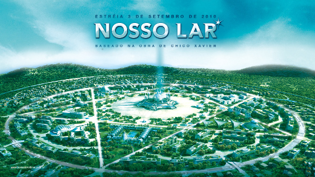
Em suma: O "Projeto Vênus" é uma espécie de religião secular, não muito diferente de um socialismo utópico e algo ingênuo, talvez desenvolvido para substituir outras espécies de utopias políticas de transcendência, como o marxismo. O tipo de linguajar empregado nas apresentações iniciais é bastante próximo ao do proselitismo religioso comum, ainda que os que se iniciem encontrem algo diferente. Digo que é um movimento de caráter quase religioso porque vários dos termos normalmente empregados por pregadores místicos new age são repetidos pelos divulgadores: "We propose a fresh, holistic approach…" e "alternative vision unlike any social system that has gone before".
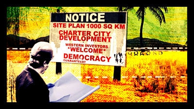
Tudo isso é muito velho. No caso do filme Zeitgeist original, é a testada e aprovada receita do fascismo e suas estratégias de propaganda de massas. No caso do Projeto Vênus, a arregimentação de pessoas em torno de ideais políticos e econômicos que prometem um paraíso terrestre. Da combinação dos dois surge um movimento que se afirma como revolucionário, mas que de fato está incorporando elementos da Escola Austríaca de economia, uma corrente de pensamento que tem mais de 150 anos e que já foi amplamente refutada por diversos autores, não só de esquerda como de direita, e cujos preceitos praticamente deixaram de ser aplicados desde a substituição do dinheiro baseado em padrão ouro pela moeda fiduciária. No fim do dia o que temos é a propagação de uma doutrina ultra-liberal que é extremamente interessante ao status quo.
Eu imediatamente identifiquei nesse movimento um caráter de artifício, astroturfing.[6] Claramente aquelas pessoas todas que subitamente estavam descobrindo a mesma teoria econômica não podiam fazê-lo de forma espontânea, ou estavam sendo pagas para difundir aquelas ideias, ou tinham sido capturadas por uma estratégia de marketing (ou de lavagem cerebral, que dá no mesmo). Particularmente preocupante foi o discurso de ódio de classes, que começou de forma inocente nos tempos de Orkut, em comunidades como "Piores Perfis do Orkut" e "Maldita Inclusão Digital". O ódio das classes média e alta contra os pobres se tornou totalmente mainstream. Aqueles que duvidam do conceito de luta de classes proposto por Marx precisam analisar mais friamente o que vem acontecendo na internet no Brasil para verem como a mecânica do antagonismo entre o proletariado e a burguesia se tornou transparente.
A "conspiração anarcomiguxa" se tornou evidente por volta de 2011 e 2012, substituindo o "movimento ateu" que havia sido fashion entre 2006 e 2010 (e do qual eu mesmo fui parte por um tempo, antes de perceber que ele não levava a nada de bom). Sua principal característica naquele momento inicial era o uso de meios tecnológicos (internet e redes sociais) para difundir discursos ultraconservadores disfarçados de revolucionários. Esses discursos incluíam:
Conservadorismo Político
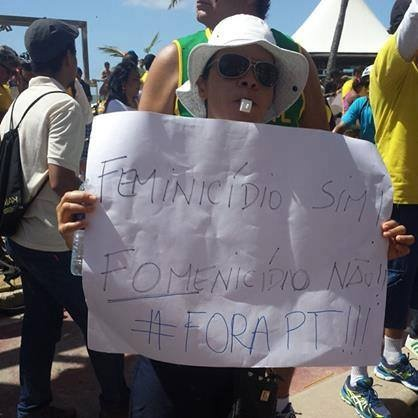
O brasileiro possui uma documentada a tendência ao conservadorismo, cujos motivos parecem provir da religiosidade, da estrutura social muito rígida e da ausência em nossa história de momentos de quebra da hierarquia. Este conservadorismo pode ser visto, por exemplo, no próprio dístico de nossa bandeira: "Ordem e Progresso".
Esse conservadorismo assume, em certos setores da sociedade, um medo atávico de toda forma de mudança, rejeita todos os governos e partidos não conservadores, mesmo os de centro-esquerda, tacha-os todos de "estatistas", "socialistas", "comunistas" ou outras palavras que estejam em voga para rotular e desqualificar o outro.
Uma rejeição tão extrema que chega a rejeitar todo fruto da esquerda, sem reflexão sobre seu valor para a sociedade como um todo ou na negação do papel da esquerda na obtenção de conquistas sociais, como os direitos das mulheres.
Anti-Comunismo
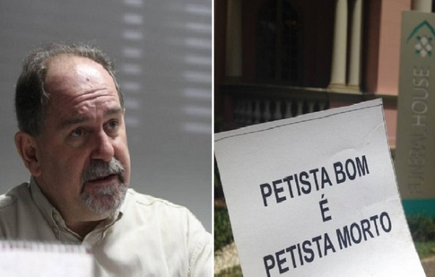
O Comunismo é o bicho-papão que a mídia e os políticos de extrema direita usam para amedrontar os analfabetos políticos. Não importa se os comunistas nunca foram fortes no Brasil, não importa se o governo é, de fato, de um leve tom de rosa, em vez de vermelho.
O anti-comunismo leva, necessariamente, ao fascismo, pois os extremos se tocam. O problema é que, no caso do Brasil, por não existir uma ameaça comunista real, o anti-comunismo acaba sendo um falso pretexto para uma radicalização.
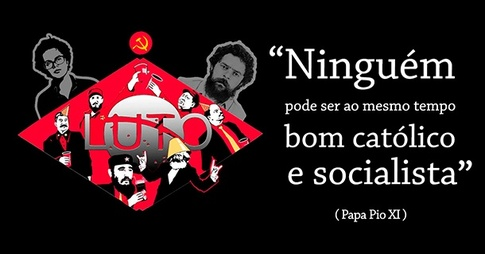
O verdadeiro motivo do anticomunismo no Brasil é a luta de classes, é a reação das elites a qualquer movimento em favor das classes populares, mínimo que seja. A popularização do anti-comunismo leva ao fascismo e o fascismo se reveste, no Brasil, de uma característica de ódio de classe e de rivalidade regional. Ricos odeiam os pobres, sudestinos odeiam nordestinos, sulistas odeiam o resto do Brasil, brancos odeiam pretos… Uma das evidências do caráter fascistóide do anticomunismo brasileiro é a sua estratégia de buscar legitimação através da religião, como pode ser visto na imagem à esquerda.
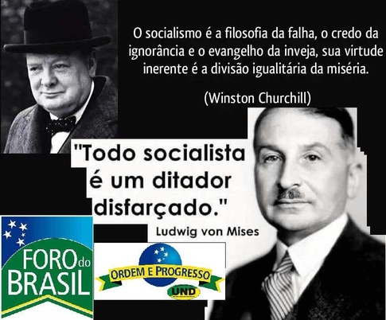
A Escola Austríaca de economia vem se encaixar neste cenário porque propõe o que pode ser claramente considerado economic hate speech (discurso de ódio econômico), como foi definida em um fórum internacional que não me recordo. Como todo liberalismo, ela nega a possibilidade de uma ação social em favor do indivíduo, jogando sobre este toda a responsabilidade de fazer-se e todo o infortúnio do próprio fracasso. Mais do que isso, o minarquismo ao qual está relacionada conduz-nos a uma situação em que o estado deve se retirar até mesmo de seus espaços tradicionais de atuação, deixando os indivíduos, todos, à mercê de uma espécie de "estado da natureza" hobbesiano.
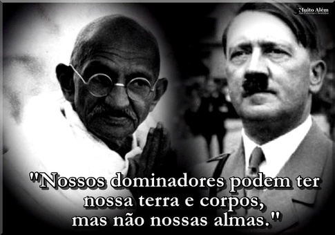
Outra coisa que causa espécie é a popularidade aparente de Hitler no Brasil, considerando que poucos de nós passaríamos pelo crivo nazista de uma "raça pura". Há inúmeros sites e blogs (geralmente hospedados no exterior) que elogiam o führer, como o Legio Victrix, que publicou um artigo chamado O Fardo de Hitler, de onde se extraem afirmativas tais como ele ser um branco leal que defendeu o seu povo. Este estranho amor por Hitler é ainda mais incompreensível se considerarmos que são muitos os que argumentam que o fascismo e o nazismo são de esquerda (e toda esquerda, obviamente, é comunista e comedora de criancinha).
Fascismo É Esquerdismo
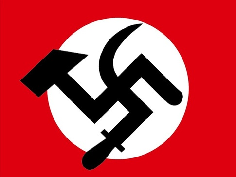
Como o fascismo é universalmente desprezado (e mais ainda o nazismo), a direita tenta constantemente impingi-lo à esquerda, ignorando toda evidência histórica (afinal o público alvo desta propaganda política é completamente ignorante de História mesmo…). Depois e além disso, os símbolos nazi-fascistas e/ou socialistas são usados para atacar todos os projetos políticos de esquerda.
Liberdade Pessoal
Pelo menos em seus primeiros estágios, o movimento advogava pelos direitos dos ateus, dos gays, das minorias, etc. Talvez por isto, e por ainda conservar uma ideologia de liberdade de ação do indivíduo (o extremo individualismo é parte do ancapismo), muitos membros dessas minorias acabaram seduzidos e não se afastaram da ideologia nem mesmo quando o movimento decaiu para a condenação das cotas raciais, o combate à educação inclusiva, as leis de igualdade de gênero, as políticas de proteção à mulher etc.
Isto nos leva a situações como a desse rapaz, que é homossexual mas se diz de extrema direita e apoia Jair Bolsonaro, o mesmo homem que disse que preferia ver seu filho morto do que descobrir que ele é homossexual.
Fundamentalismo Econômico
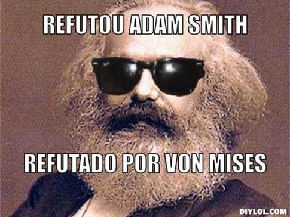
As opiniões econômicas defendidas pelo movimento anarcomiguxo podem ser qualificadas de "fundamentalistas" devido à maneira como encaram as ideias de Adam Smith e, principalmente, de Ludwig von Mises. Embora esta crítica também possa ser feita, de maneira limitada, à esquerda, o grau de reverência prestado pelos anarcomiguxos a Mises vai muito além dos marxistas mais ortodoxos. Ainda mais porque o anarcomiguxismo não se aproveita profundamente dessas ideias, mas as difunde em "versículos" avulsos, criando memes como "Mises Refutou Marx", que se propagam e adquirem um valor de verdade sem que as pessoas realmente tenham lido Marx, ou mesmo Mises.

Essas pessoas, que parecem crer em uma Mão Invisível regulando os mercados, mesmo quando não creem em Deus, elegeram Marx, Keynes e Vargas como os capirotos da vez, os demônios que devem ser exorcizados do cenário político-ideológico nacional.
Elas chegaram ao ponto de tratar o texto original do principal trabalho de Mises ("A Ação Humana") como uma espécie de texto sagrado que foi salvo do nazismo ao ser "contrabandeado" para os EUA no fim da Segunda Guerra Mundial.
Anarco-capitalismo
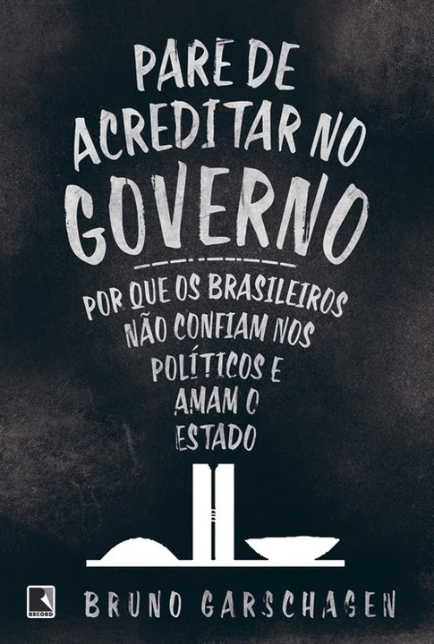
A ideia de que o estado (ou pelo menos o estado brasileiro) é um inimigo que precisa ser destruído (ou pelo menos castrado) se tornou viral nos últimos anos, capitalizando a tradicional aversão do brasileiro a pagar impostos (e quem gosta?). Propõe-se que o estado seja desmantelado e que só restem as funções "mínimas" (quais seriam é objeto de certa controvérsia, mas os mais exaltados chegam a dizer que até mesmo a justiça e a defesa deveriam ser privadas).
O anarco-capitalismo é um sistema não somente utópico, mas também impossivelmente contraditório, visto que ele prevê a permanência da propriedade privada em um contexto no qual o estado supostamente desapareceria. Isto não faz sentido porque a propriedade privada nada mais é do que uma criação do estágio mais avançado do desenvolvimento político da humanidade: o estado moderno (pós-medieval). Ela existiu na Antiguidade em caráter embrionário, mas a forma de propriedade que se pretende preservar não é a mesma que existiu nas antigas civilizações.
Na ausência do estado, caso a propriedade privada se mantenha, a única solução possível para a contradição é a concentração da propriedade: aqueles possuidores de menos propriedades e de menos poder voluntariamente entregarão a sua propriedade a outros que detenham mais, buscando a sua proteção. Já existiu um momento na história da humanidade em que este movimento ocorreu: foi a transição da Antiguidade para a Idade Média, e o resultado foi o Feudalismo. Vale lembrar que neste não havia realmente "propriedade privada" como a conhecemos, visto que a propriedade não possuía necessariamente um valor monetário e a maior parte das transações que resultavam em transferências de propriedade ocorria por força de guerra, tratados, doações ou simples roubo (nos casos micro).
O que podemos concluir disso é que os proponentes do anarco-capitalismo não devem ser levados a sério como alternativa política, apenas como agitadores que buscam desestabilizar o sistema político atual.
Ayn Rand e o Objetivismo
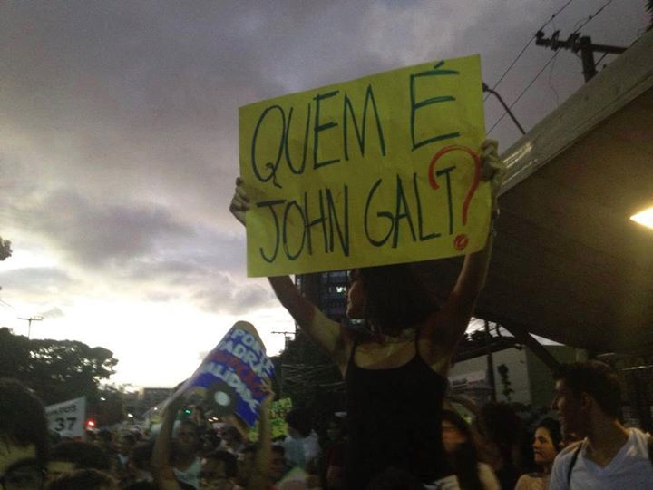A Rebelião de Atlas, de Ayn Rand">
Praticamente desconhecida no Brasil antes de 2009, a escritora Russo-Americana teve suas obras e ideias difundidas no Brasil desde então. Inicialmente popularizada no seio do "movimento ateu" por uma facção que dizia que "não é preciso ser comunista para ser ateu", as obras da autora chamaram a atenção para o conceito do anarco-capitalismo, que acabou ligando ao minarquismo e às ideias de Ludwig von Mises.
A Rebelião de Atlas pode ser resumido como a história de um lock-out das grandes empresas, que leva ao colapso da civilização, enquanto os grandes empresários se protegem do caos em um refúgio discreto no meio do deserto. Que uma obra contendo tais ideias se torne popular com outros que não os próprios empresários já é um sinal de que a máquina de propaganda da burguesia está a todo vapor.
Como Essas Ideias se Conectaram
Se você não for cuidadoso, a imprensa o fará odiar o oprimido e amar o opressor.
Tudo começou com o "movimento ateu", que surgiu na virada do milênio. Eu estive lá, eu vi o monstro nascer do ovo. Eu vi o despeito pelas minorias aparecer em lugares que deviam ser tolerantes, eu vi o filme Zeitgeist aparecer e ser saudado como o prego definitivo no metafórico caixão do cristianismo. Muitos ficaram tão excitados com ele que o difundiram como se fosse um evangelho, e poucas vozes se levantaram para gritar que o rei estava pelado.
Zeitgeist é odioso do começo ao fim, a menos que você esteja tão ansioso para referendar sua descrença em Deus que aceite engolir sem filtrar tudo que lhe reconforte. Assisti-lo é como ver uma versão em cores e um pouco menos calhorda do Judeu Eterno.
Claramente estruturado como uma peça de propaganda, o filme tem uma primeira parte que apela a pessoas progressistas (por promover o ateísmo), uma segunda parte que apela a pessoas esquerdistas (por espalhar a ideia de que o governo americano é mau a ponto de atacar o próprio povo) e uma terceira parte que traz o velho antissemitismo revestido de uma "nova" forma, apenas não mencionando que os "banqueiros internacionais" são judeus porque isso seria óbvio demais como referência aos "Protocolos dos Sábios de Sião". Esta mesma terceira parte propõe como "libertação" desta maligna ordem internacional exatamente a doutrina econômica da Escola Austríaca que, neste contexto, é praticamente um discurso de ódio econômico, ou uma expressão ideológica da luta de classes (porque justifica o status quo como fruto de uma meritocracia e de uma "ação humana" essencialmente moral e natural).
Zeitgeist foi engendrado de forma a levar pessoas progressistas (ateus e críticos dos EUA) a difundir uma ideologia fascista e antissemita sem que percebessem! Eis a essência da análise do artigo do Third Estate.
"Peter Joseph" (ou seja lá quem for que tenha realmente criado Zeitgeist) posteriormente renegou o filme (mas não parou de promovê-lo através do seu site, apenas incluiu um disclaimer tão relevante que a maioria das pessoas que continuaram seguindo o "Movimento Zeitgeist" nem sabe que o filme não importa mais tanto assim). Renegou-o porque era supostamente "sem foco" e então o foco foi buscado, ao criar o "Movimento Zeitgeist", baseado nas ideas do "Projeto Vênus", de Jacque Fresco.
Podemos descrever tanto o PV como o MZ como "utopias tecnocráticas e minarquistas". Ambos são claramente ideologias de quinta-coluna que são difundidas pelo terceiro mundo para deslegitimar a política tradicional, infundir uma admiração pelo tecnocrata e preparar terreno para o passo seguinte, as Cidades-Estado (Charter Cities) de Paul Romer.
Posteriormente o PV percebeu que estava sendo usado sem que ganhasse nada com isso e houve um rompimento. Quando isso aconteceu, o PV já tinha deixado de ser útil ao MZ, que dele se vampirizara todo um conjunto ideológico e uma série de propostas que passara a aperfeiçoar, e o próprio MZ deixara de ser útil à "conspiração anarcomiguxa", que se preparava para passar ao estágio seguinte. Por causa disso, os protestos de Jacque Fresco foram ouvidos exatamente por ninguém e foram somente estas as pessoas que deram importância às fortes palavras que ele usou.
Por volta de 2011, quando o golpe hondurenho já tinha se consolidado, começou a transição da ideia de uma tecnocracia autossustentável em pequena escala para o projeto de cidades tecnocráticas autogovernadas que deveriam ser criadas em países pobres para serem chamarizes de desenvolvimento local.
Uma charter city seria organizada através do seguinte processo:
-
Um país do terceiro mundo, desejando desenvolver-se, reserva uma área (preferencialmente costeira) para o estabelecimento de uma cidade-livre. A área cedida pode ter ou não infra-estrutura construída, o que dá a entender que pode ser transferida uma área livre ou uma cidade pre-existente. Este país é chamado de "receptor".
-
Um país desenvolvido, disposto a transferir recursos humanos e tecnológicos, assume a propriedade desta área e a popula com indivíduos de sua escolha (o que dá a entender que a população original seria expulsa). Os novos habitantes da cidade livre seriam escolhidos de forma a preencher os papeis esperados na estrutura econômica que se constrói, e a cidade livre deveria começar sem excessos de população ou infra-estrutura (o que mais uma vez dá a entender a expulsão da população local original). Este país é chamado de "doador".
-
Ao ceder a propriedade da área escolhida, o país receptor assina com o país doador um tratado (charter) pelo qual ficam estabelecidos os direitos e obrigações das duas partes, dos indivíduos que residirão na área e dos indivíduos que residirão ao redor da área. Este tratado, assinado entre os dois países, será a base legal para a organização administrativa da cidade (o que deixa subentendido que a entidade assim criada não terá um processo político democrático, pois no terá a permissão de escrever a sua própria constituição).
-
Um terceiro país, que pode ser o mesmo segundo ou não, assume o papel de "garantidor" (no caso de o país doador não ser capaz de garantir militarmente os seus direitos). O papel do país garantidor é evitar que o país receptor reocupe a área cedida ou que o país doador não cumpra suas obrigações para com o país receptor (que normalmente incluirão o pagamento de algum tipo de arrendamento, entre outras coisas). Não se sabe de que forma um terceiro país aceitaria tal encargo sem ganhar nada. Desta forma, desde o primeiro momento, eu critiquei a ideia das charter cities dizendo que o país garantir só poderia ser o mesmo doador, o que tornaria a cessão uma ocupação colonial pura e simples, ou então seria um terceiro país com interesses investidos na cidade, o que o tornaria um co-doador e nos reduziria de novo à situação colonial.
-
O desenvolvimento da cidade-estado assim constituída resultaria, a longo prazo, em benefício para o país hospedeiro, pois ao fim do prazo de arrendamento a cidade retornaria à sua posse (tal como Hong Kong voltou à China) com a sua infra-estrutura, sua tecnologia e seus novos e "melhores" habitantes.
Que ninguém tenha visto nisso uma reedição do "fardo do homem branco" é um depoimento comovente sobre a cegueira das pessoas que prestaram atenção nisso. Mas essa foi a primeira proposta de utopia anarco-capitalista a se tornar mainstream. Descaradamente inspirado em cidades-feitoria estabelecidas pelos portugueses e ingleses ao longo de sua história colonial, o projeto foi inicialmente proposto em Honduras, onde um governo ultradireitista substituiu o projeto popular de Manuel Zelaya. A ideia de converter o mundo inteiro em uma série de felizes cidades-estado verdes foi aqui substituída pelo projeto de entregar partes de seu país ao capital internacional e cobrar aluguel.[7]
A ideia das charter cities é uma reedição desavergonhada da "Política das Portas" através da qual o Império Britânico se consolidou. Onde houvesse portos e estreitos importantes para o comércio internacional, lá os ingleses estabeleceram uma colônia, até que quase todo o comércio internacional passava por gargalos controlados pelos ingleses. Foi assim que controlaram as Ilhas do Canal, Gibraltar, Chipre, Somalilândia, Iêmen, Omã, Estados da Trégua (Emirados Árabes Unidos), Cingapura, Hong Kong, Belize, Costa dos Mosquitos, Cidade do Cabo…
Esta "utopia ancap" serviu ao propósito de apresentar a ideologia neoliberal dominante como uma força de desenvolvimento, mas também como uma "ideia perseguida", afinal as utopias são válvulas de escape para aqueles que não se conformam com o mundo. A existência de uma "utopia do status quo" é algo ao mesmo tempo inédito na história e uma prova do quanto as técnicas de propaganda política começadas por Goebbels já evoluiram até nós.
O passo seguinte é transformar essas ideias em um produto de massas:
Como essa camiseta vendida pelo Instituto Mises Brasil e o boné citado anteriormente. Tangibilizar a ideologia que normalmente seria detestável, transformando-a em um produto fashion é uma forma, assim, de conectar-se com as massas, enquanto os partidos de esquerda assistem, impávidos. Aparentemente, os conceitos de fetichismo e fetiche da mercadoria foram melhor pelos críticos de Marx do que por seus seguidores, ou teríamos visto mais reações a esta descarada campanha de marketing.
O Mundo Segundo Mises e Olavo
Por volta de 2006 os caras descolados da blogosfera brasileira começaram a dizer que havia algo a respeito do mundo que os governos não queriam que "nós" soubéssemos. A Escola Austríaca trazia uma verdade perseguida a respeito da "realidade" dos sistemas econômicos:
-
O dinheiro não possui valor inerente, ele só vale porque confiamos que ele vale (fiat money);
-
Mas nem sempre foi assim, houve uma época em que os estados não tinham o poder de criar dinheiro do nada, precisavam que esse dinheiro fosse ancorado em uma reserva real de valor (padrão ouro);
-
A criação de dinheiro sem lastro em um valor real é forma de especulação, uma espécie de pirâmide financeira, e, portanto, insustentável;
-
Esta seria a verdadeira explicação das crises do capitalismo, não aquela dada por Marx ("Mises refutou Marx");
-
A solução para isso é restabelecer o padrão monetário (ainda que isso vá resultar em uma violenta deflação e na exclusão automática de milhões de pessoas da sociedade econômica).
Mises era profundamente anticomunista (e também um simpatizante do absolutismo do império Austro-Húngaro, mas isso não vem ao caso). Aqueles que aceitavam as ideias de Mises no Brasil eram necessariamente anticomunistas, uma das razões pelas quais a Escola Austríaca se popularizou foi justamente sua "capacidade" (mesmo ilusória) de explicar (ainda que falsamente) as contradições do capitalismo sem recorrer a Marx. Remover Marx da discussão política e econômica é uma obsessão universal da direita, mas no Brasil isto conduz a um paroxismo.
Por isso, houve uma confluência natural entre aceitar as explicações de Mises e concluir que o sistema econômico real (e falho) seria, de fato, um sistema inerentemente comunista, já que John Maynard Keynes, um dos principais proponentes das políticas macroeconômicas que ainda são mainstream no mundo todo, baseia parte de seu trabalho em Marx. Isto levou os fãs de Mises a ideias mirabolantes segundo as quais a economia mundial estaria não apenas contaminada de marxismo, pelo vício de origem em Keynes, mas seria em si "comunista", donde a ideia absurda de que a "Nova Ordem Mundial" seria implantada por Obama, pelo Foro de São Paulo e pelo Grupo de Bilderberg.
Está reconhecendo esse discurso? Bingo! Esse é o pensamento essencial de Olavo de Carvalho, que começou a interagir muito cedo com os fãs de Mises, que haviam sido originalmente membros do Movimento Zeitgeist, que havia sido instilado inicialmente no meio do "movimento ateu" brasileiro justamente para remover a influência marxista-comunista (que seria natural em tal movimento, visto que os mais visíveis proponentes do ateísmo sempre foram os comunistas).
Olavo de Carvalho se tornou nos últimos anos um personagem muito mais relevante do que deveria ser, considerando a sua formação (nenhuma), seu passado (astrólogo), sua ideologia (ultramontana e desconectada da modernidade) , sua idade (acima dos sessenta anos), seu nível intelectual (alto, mas não suficiente para impressionar), suas leituras (claramente focadas em autores e ideias que concordam com suas ideologia, sem pluralismo e sem debate) e sua inserção no mundo (um ancião expatriado que faz vídeos toscos para a internet falando sobre assuntos de pouco apelo popular). Como é possível que este homem, responsável por dizer inanidas como que a Pepsi usa fetos abortados como adoçante ou que Newton era um homem de "considerável estupidez" conseguiu influenciar tanto o discurso político do país?
Carvalho é um subproduto de uma cultura que despreza a educação formal e odeia toda aparência e intelectualidade. O Brasil sempre teve um viés contrário a pessoas diplomadas e cultas, rios de tinta já foram gastos documentando piadas contra "nerds" e contra pessoas que vivem "nas nuvens". Tudo isso remonta ao tempo em que os adversário políticos de Rui Barbosa o apresentavam como um velhinho incapaz de conversar com o povo, como na famosa piada do ladrão de galinhas.
Esta rejeição da intelectualidade reflete os hábitos da República Velha, cujo poder político real estava nas mãos de uma elite agrária que tinha pouco lustro cultural (apenas o mínimo necessário), mas se via forçada a contratar contadores, advogados, médicos, amanuenses, engenheiros etc. Para preservar a relação de poder, era necessário desvalorizar o trabalho desses profissionais, mesmo que fosse essencial, e apresentar como uma virtude, ou até como uma forma de saúde, a ausência de uma educação formal completa (por conseguinte educar demais uma criança a enfraqueceria). Podemos verificar a aplicação desta ideologia nas novelas, onde os personagens broncos são vistos como puros de coração, mais bravos e mais honestos, destinados ao sucesso, enquanto seus inimigos são geralmente pessoas refinadas e educadas. Na nova novela das oito, por exemplo, os estudos na cidade grande enfraqueceram o herdeiro do coronel, atrapalharam-no a assumir seu papel após a morte do pai. Talvez por esse viés anti-intelectual tenha sido tanta a difusão do pensamento de Nietzsche no Brasil, visto que ele é um filósofo mais acessível ao vulgo e que claramente é irreverente em relação ao resto da filosofia (ou a grande parte dela).
Carvalho orgulhosamente diz que fugiu da escola antes do quarto ano e acredita que as escolas são usadas para doutrinação marxista. Ele não apenas acredita que há professores ou livros marxistas na escola, mas que a escola em si é uma criação comunista. Olavo de Carvalho propõe a educação doméstica e o autodidatismo como ferramentas para contrabalançar a doutrinação marxista (isso enquanto ele não propõe a abolição da escola como um todo).
Carvalho pode ser descrito como um conservador ultramontano, o mais extremo proponente do reacionarismo que eu já vi. Ele chega ao ponto de duvidar que o cigarro cause câncer porque as pesquisas sobre o tabagismo afetam os lucros dos fabricantes de cigarro. Ele é tão obcecado em restaurar o Antigo Regime que ele chega a rejeitar a física newtoniana, que prepara o terreno para Teoria da Relatividade, de Einstein, porque ele entende a Relatividade como um sinônimo de Relativismo cultural.
Antes de 2010 era relativamente comum encontrar os artigos de Olavo de Carvalho publicados na imprensa brasileira. Vi-os no Estado de São Paulo, no Estado de Minas, no Jornal do Commercio, no Jornal do Brasil (quando ainda existia) e no Hoje em Dia. Posteriormente ele perdeu esse espaço (parece haver uma reciclagem contínua dos nomes na imprensa brasileira, já que as ideias não podem mudar profunda e nem rapidamente) e mudou-se para os Estados Unidos (Richmond, VA) de onde passou a produzir um "curso de filosofia" em vídeos, curso este que ele diz ser a sua única fonte de renda, mas não é claro como ele consegue custear o padrão de vista que ostensivamente tem utilizando apenas os ganhos obtidos com um curso que pode ser acompanhado gratuitamente no YouTube. Tal como Yoani Sánchez, Olavo de Carvalho parece ser financiado por alguma fonte oculta.
Carvalho também diz que lhe foi concedido um visto para viver nos EUA em reconhecimento aos seus "relevantes serviços prestados à humanidade", o que é realmente algo incrível, porque tais serviços nunca foram realmente apontados e o seu curso de filosofia foi descrito como uma mistura de Platão e Dercy Gonçalves por ninguém menos que Reynaldo Azevedo, um dos jornalistas mais conservadores do Brasil.
Desde 2011 o pensamento de Olavo de Carvalho, que era então uma curiosidade ridícula do submundo da internet, vem se tornando cada vez mais popular. Não só porque muitas pessoas que já tinham simpatias conservadoras o foram descobrindo mas também porque muitas figuras proeminentes da mídia disseram ser seus pupilos, tais como Lobão, Danilo Gentile, Roger Moreira, Rodrigo Constantino e outros. Até o Jair Bolsonaro e o Reynaldo Azevedo foram forçados a interagir com ele.
Olavo de Carvalho se conecta com o Movimento Zeitgeist, como vimos, porque parece existir um processo deliberado para girar à direita (ou ainda mais à direita) o pensamento hegemônico na blogosfera brasileira. Zeitgeist nos fez pensar que os sistemas hegemônicos no mundo; religioso, político e econômico; são grandes mentiras e esquemas geridos por pessoas inescrupulosas. Quando você sacode as fundações das crenças das pessoas assim tão profundamente, se elas comprarem a sua história, estarão de tal forma abaladas que serão um terreno fértil para semear novas crenças. O Instituto Mises Brasil e Olavo de Carvalho, cada um de seu lado, semearam intolerância, discursos de ódio, falsas dicotomias, neofascismo, ódio de classes e valores reacionários. O que o Brasil colhe agora são os frutos disso.
Por volta de 2011 começou a se popularizar também o bitcoin, a moeda virtual supostamente fora do controle de qualquer país e isenta de impostos (mas não de taxas cobradas pelos operadores). A ideia de uma moeda tecnológica era música para os ouvidos das pessoas "descoladas" e a ideia de uma moeda fora do controle de qualquer governo parecia ressoar nos ouvidos dos ancaps, que justamente queriam exemplos bem-sucedidos de mercados autorreguláveis. Por muito tempo o bitcoin foi vendido como um exemplo. Até que se tornou instável, acabou caindo sob o controle de uns poucos operadores localizados na China e foi esquecido. Em um país sem memória, basta você parar de dizer as besteiras que dizia que as pessoas continuam acreditando que você sempre esteve certo.
Dâniel Fraga foi a ponte entre a turma "descolada" que gostava da ideia de uma moeda "tech" e os proponentes das ideias ultra-liberais de Ludwig von Mises e Murray Rothbard (que chegou a escrever artigos defendendo o direito de dirigir bêbado e contrários à obrigação dos pais alimentarem e educarem os filhos). Fraga, enquanto dizia que o estado era um esquema e o imposto era um roubo (pervertendo Pierre Proudhon, que dizia que a propriedade privada é um roubo), recomendava avidamente os artigos do Instituto Mises Brasil como fonte de sua "sabedoria" econômica.
Uma Mentira, Mil Vezes
Toda propaganda deve ser popular e estabelecer o seu nível intelectual de acordo com a capacidade de compreensão da inteligência mais limitada dentre aquelas as quais se dirige. Consequentemente, quanto maior a massa que se quer atingir, mais baixo deverá ser o nível puramente intelectual
Goebbels afirmou que uma mentira mil vezes contada acaba se tornando a verdade, e também que uma mentira enorme é mais crível que uma peta, porque as pessoas pensam que ninguém teria coragem de mentir enormemente, então deve ser verdade aquilo que parece incrível. Desde os primeiros dias da "conspiração anarcomiguxa" nós temos sido bombardeados diariamente por textos e imagens que afirmam que vivemos sob uma "ditadura petista" e que há uma "nova ordem mundial comunista" sendo construída pelo "Foro de São Paulo".
A imagem à esquerda supostamente mostra quantas coisas se podia comprar com R$ 100,00 em cada ano mostrado. Em uma primeira análise, nada há de errado, a inflação representada parece correta, mas, no entanto, posta fora de contexto, essa imagem é usada para sugerir que hoje as pessoas compram menos com o seu dinheiro do que compravam em 1997, ignorando que os salários também foram corrigidos nesse ínterim. Esse tipo de argumentação maliciosa inunda as redes sociais no Brasil há vários anos e as forças de esquerda se mostraram impotentes para desmenti-las, porque elas apelam ao senso comum mais rasteiro, mesmo sendo compartilhadas, frequentemente, por pessoas inteligentes, que sabem onde está o erro, mas compactuam com os objetivos.
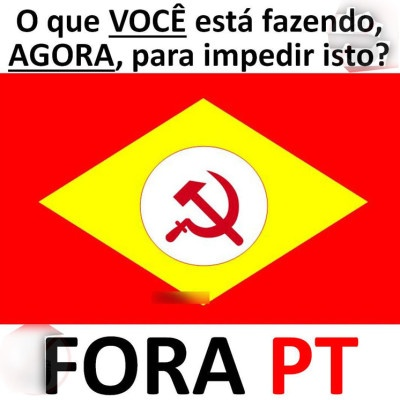 Não importa que o Brasil continue sendo uma democracia multipartidária, não importa que o Brasil tenha completa separação de poderes conforme Montesquieu imaginou e não importa que o Partido dos Trabalhadores venha jogando conforme as regras da democracia representativa e de nosso torto presidencialismo de coalizão. Vende-se a ideia de que estamos caminhando para uma ditadura comunista. Aliás, tampouco importa a morte do comunismo como alternativa política real no mundo. O que importa é que o simples fato de haver por parte do PT algum tipo de simpatia com o socialismo é motivo para o apelo simplista ao senso-comum através do qual as pessoas são levadas a crer que a menor inclinação à esquerda automaticamente leva ao stalinismo e ao Gulag, sem qualquer tipo de escala intermediária.
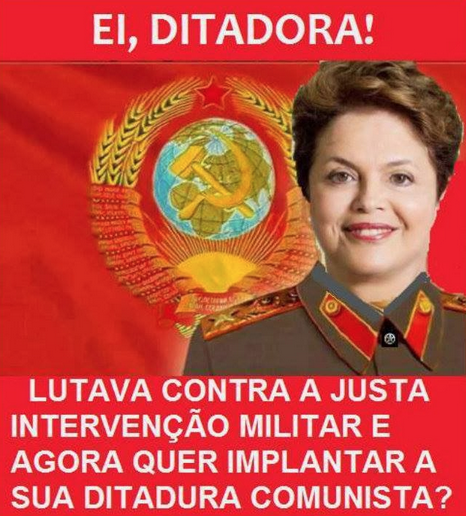 O problema é que o Partido dos Trabalhaodores é uma metafórica Cartago para a direita, e Cartago deve ser destruída porque embora hoje não ameace, poderá um dia, talvez, insurgir-se novamente. Para a direita, a simples existência do Partido dos Trabalhadores e sua capacidade de fazer mais do que perder eleições para legitimar as vitórias da direita, é uma ameaça intolerável. Citando Lord Farquardt, de Shrek: "Já é uma falta de educação estar vivo quando ninguém te quer". Assim, o que poderia ser aceito por um tempo (a permanência de um partido de esquerda no poder) se torna progressivamente intolerável).
No caso específico desta imagem à esquerda, para além do recurso à dicotomia, temos, também, a defesa implícita da ditadura militar, aqui chamada de "justa intervenção militar".
A mentira, tão repetida, ganha peso e ganha força, agora quase todos creem que o Partido dos Trabalhadores é essencialmente mau, que ele conduz uma "ditadura comunista" no Brasil, ou quer isso, e que o comunismo é essencialmente satanismo.
Por que esse discurso de ódio se popularizou tanto? Por que tal movimento conseguiu crescer contra um governo eleito democraticamente e que joga conforme as regras? Como?
As Bases Locais do Movimento
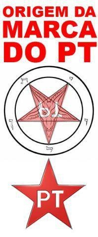
Como o objetivo sempre foi retirar do poder o Partido dos Trabalhadores, a estratégia nunca importou, isto explica a "conspiração anarcomiguxa" atirar para tantos lados. Em certa época, por exemplo, houve uma tentativa de restabelecer a ARENA, o partido da ditadura. O objetivo era testar a popularidade de uma alternativa militar. Como o projeto foi mais rejeitado que celebrado, e como as Forças Armadas parecem não ter se interessado, a ideia foi silenciosamente deixada de lado.
Atirar de diversas frentes é uma forma, também, de passar a impressão de que existe uma insatisfação generalizada contra o governo, quando, no início, essa insatisfação era muito localizada em certas classes sociais.
Se o movimento fosse baseado exclusivamente em ideias e objetivos importados, não teria apoio interno e não cresceria. E o Brasil é muito grande para ser permeável a estratégias de curto prazo. Em países grandes e populosos, como o Egito, a Ucrânia, o Brasil e outros; é necessária uma longa fase de preparação, onde se testa não apenas os discursos que afetarão melhor ao povo, mas também a capacidade de reação do regime. Uma revolução colorida bem-sucedida surfa na onda de sentimentos locais, explora o poder de frustrações acumuladas e magnetiza o povo através de seus medos irracionais.
Assim sendo, cada movimento revela uma face oculta do país profundo que se revolta. A Sérvia revelou uma grande ansiedade de democracia, a Ucrânia revelou contas não resolvidas com o passado fascista, o Brasil está revelando o tipo de sociedade de classes rígidas que sempre foi.
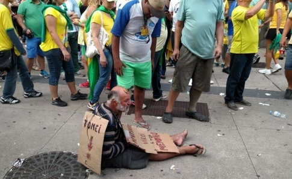
Apesar de sua óbvia composição com setores da política tradicional, o Partido dos Trabalhadores tem sido bastante progressista (mesmo ficando aquém das expectativas da maior parte da esquerda). Porém, o mínimo progresso que obtiveram causou uma grande ira nas classes média e alta devido à inclusão social das classes menos favorecidas, entre outras coisas.
Políticas Controversas do PT
As seguintes políticas do Partido dos Trabalhadores foram as causadoras de controvérsia nesses últimos anos, contribuindo para desgastar a imagem do governo e acirrar a luta de classes no Brasil.
Quotas raciais nas universidades
Acusada de "criar racismo" no Brasil, a política de quotas raciais foi divisiva desde o início, criticada até mesmo por setores da esquerda que temiam um acirramento das tensões raciais. Para contornar estas críticas o governo abrandou a política de quotas, mudando o conceito de "quotas raciais" para "quotas para alunos egressos de escolas públicas", o que pouco adiantou, pois o exemplo dado pelo governo federal foi seguido por vários governos estaduais e municipais e porque as quotas, sejam por raça ou por escola originária, tiveram o mesmo efeito: trazer uma quantidade maior de negros e pardos para as melhores universidades do país.
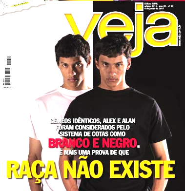Veja viu nisso motivo para espinafrar a política de quotas.">
O racismo profundo da sociedade brasileira aflorou então, ao ver o negro "fora do seu lugar":
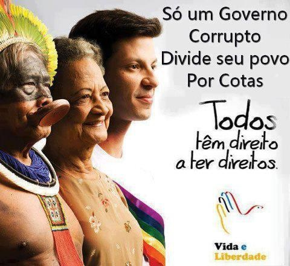
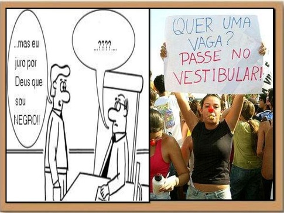
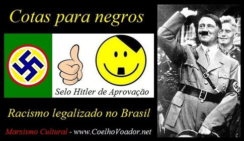
Educação inclusiva de gênero
A sociedade brasileira é profundamente conservadora em certos aspectos, um deles são os papeis de gênero. Quando os governos do PT começaram a atuar no sentido de combater a homofobia e estender direitos ao público LGBT, isto atraiu a ira dos fundamentalistas religiosos, e a extrema direita viu nisso a possibilidade de unir esses dois grupos em uma frente única contra o PT.
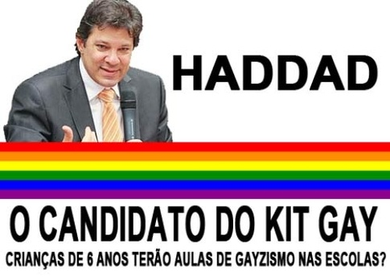
Políticas regionais
O Partido dos Trabalhadores tentou atrair investimentos (nacionais e estrangeiros) para as regiões menos favorecidas do país, o que enfureceu a elite paulista. Com a economia dos estados do nordeste e do norte crescendo acima da média nacional, reverteu-se o secular fluxo de imigrantes destas regiões para as duas metrópoles nacionais (Rio de Janeiro e São Paulo), o que vem causando efeitos interessantes:
-
O envelhecimento da população destas cidades, onde a taxa de natalidade já é menor que a média nacional e a mortalidade de jovens é alta.
-
A escassez de mão de obra, aumentando o custo de certas atividades tradicionalmente mal remuneradas, como o serviço doméstico.
Tudo isto, aliado à saturação da infra-estrutura do Sudeste e ao desenvolvimento de novos mercados consumidores em outras regiões, especialmente no Nordeste, tornou atrativa a instalação de indústrias fora do eixo Rio-São Paulo. O resultado disso foram massivas votações para o PT no Nordeste, especialmente em 2006 e 2010, o que acirrou a rivalidade inter-regional e produziu episódios de separatismo.
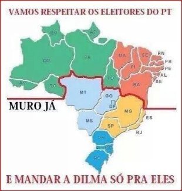
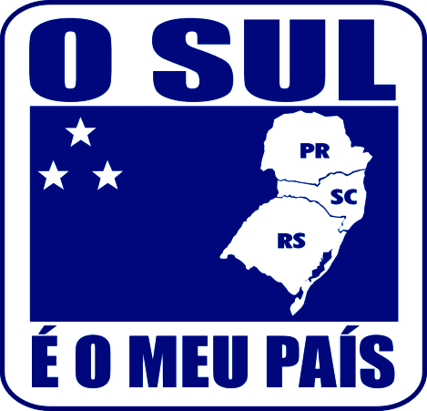
Política internacional
O Brasil mudou seu foco de um alinhamento automático com os Estados Unidos no tempo de Fernando Henrique Cardoso, que produziu o humilhante episódio do chanceler Lampreia aceitando ser revistado no aeroporto de Nova Iorque, para uma "política sul-sul" focada em reconectar a economia brasileira à África através de Angola e da África do Sul (esta última admitida ao grupo BRICS) e também construir uma comunidade sul-americana de nações.
Esta mudança de paradigma foi rejeitada pela elite brasileira, que sempre se viu como um ramo desterrado da Europa. A elite brasileira sempre se mirou na Europa, e mais recentemente nos Estados Unidos, como fonte da moda, da cultura e dos bens de consumo de alto luxo. Europa e EUA também são, historicamente, os mercados que os nossos industriais sonham atingir.
Para adicionar insulto à agressão, vários dos países cortejados pelo Brasil em sua "política Sul-Sul" são ou recentemente foram comunistas ou socialistas, o que forneceu desculpa à direita para acusar o PT de pretender criar uma nova espécie de Internacional Comunista através do tal "Foro de São Paulo" de que Olavo de Carvalho tanto fala. O mais curioso é que, apesar de nunca ter se materializado nenhuma predição feita por Olavo a respeito das políticas do tal Foro, o aprofundamento da relação Sul-Sul fez com que muitos na direita enxergassem no ex astrólogo uma espécie de visionário, mesmo não tendo visto nada.
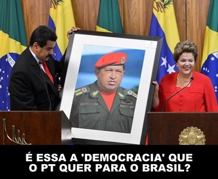
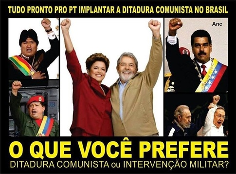
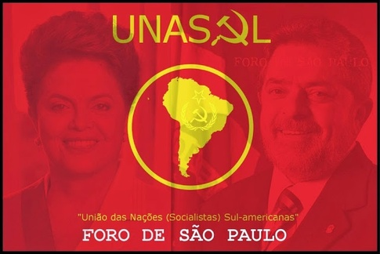
Política habitacional
Muitos entre a elite vivem de rendas ou alugueis. São pessoas que investiram em imóveis ou títulos mobiliários um patrimônio ganho no passado ou recebido em herança. Este patrimônio imobilizado lhes proporciona uma renda mensal improdutiva (na verdade esses alugueis e juros recebidos pelo patrimônio imobilizado reduzem o poder de compra da população e, portanto, dificultam o desenvolvimento econômico).
A política habitacional do PT incluiu o Programa Minha Casa, Minha Vida; que financia a compra ou construção de casas de padrão popular mediante taxas de juros relativamente baixas (e que podem ser prefixadas, dependendo da escolha do mutuário). Além do MCMV, outras linhas de crédito criadas, recriadas ou expandidas permitiram que muitas pessoas comprassem imóveis novos nas últimas décadas.
Cada uma das famílias que pôde comprar ou adquirir um imóvel financiado é uma família a menos pagando aluguel, o que diminuiu a demanda por imóveis e tenderia a derrubar os preços a médio prazo, depois de passada a euforia imobiliária da Copa do Mundo e das Olimpíadas. Já desde 2011 se fala na existência de uma "bolha imobiliária" no Brasil, embora se reconheça que ela seria diferente da bolha americana que provocou a crise de 2008.
Claro que estas pessoas que vivem de alugueis temem pelos seus rendimentos futuros se a política habitacional continuar, especialmente por causa da diminuição do ritmo de crescimento demográfico, que também pressionará para baixo a demanda.
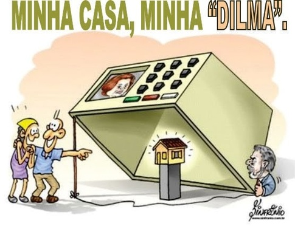
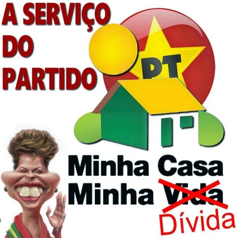
O corolário desta crítica pode ser encontrado nesta faixa:
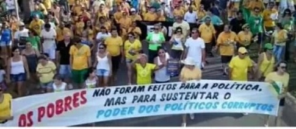
Médicos cubanos
Depois de anos tentando conseguir médicos para preencher postos de trabalho em áreas remotas do interior, o Ministério da Saúde apelou à missão médica cubana e aos Médicos Sem Fronteiras. Embora médicos de vários países tenham aceitado vir trabalhar no Brasil (principalmente de Portugal, Espanha, Argentina, Estados Unidos e Uruguai), o maior contingente foi o de cubanos pois Cuba possui um programa permanente de ajuda humanitária, reconhecido até pela ONU.
A vinda desses médicos causou extrema ira na classe médica brasileira, em um nível inimaginável, que várias vezes chegou ao paroxismo:
Em parte isso se deve, claro, ao nítido recorte da luta de classes no Brasil, como se vê nesta imagem:
Isto produziu lamentáveis episódios de ódio e até de racismo involuntário, como no caso dos jovens médicos cearenses que insultaram os cubanos que desembarcavam em Fortaleza, em sua maioria negros, com gritos de "Escravos"!
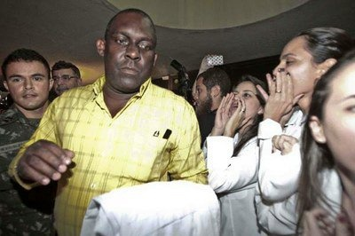
Sem falar no caso dos estudantes de medicina que sofriam abusos verbais e ameaças de morte por se expressarem favoravelmente ao governo, como este caso.
A reação dos médicos era incompreensível, visto que os estrangeiros não vinham para competir com eles, mas para ocupar lugares que ninguém tinha querido preencher, ainda que, em alguns casos, a prefeitura estivesse disposta a pagar salários enormes.
A ira dos médicos brasileiros decorreu de seu espírito corporativista, sem dúvida, em parte porque existe no Brasil uma forte reserva de mercado contra profissionais de nível superior formados em outros países, que cá só podem trabalhar mediante custosas "revalidações de diplomas" que, na maioria das vezes, são mais rigorosas do que os próprios graduados brasileiros conseguiriam passar. Existe um sentimento entre os brasileiros que estudam no exterior e entre os refugiados estrangeiros formados em medicina, segundo o qual o revalida é feito para não aprovar ninguém. Outra razão para isso é que se os pequenos municípios tiverem todos médicos residentes cairá a procura por consultas médicas nos grandes centros, onde os médicos preferem atuar para terem melhor padrão de vida.
Para muitos, porém, a rejeição aos médicos cubanos vai além do corporativismo e chega ao terreno da paranoia ideológica.
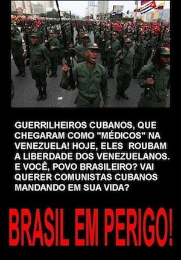
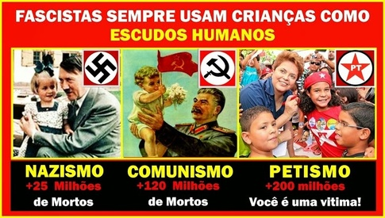
O absurdo maior, porém, é acreditar que meros seis mil cubanos podem oferecer uma ameaça a um país de duzentos milhões de habitantes.
Política educacional
Embora eu pessoalmente tenha críticas severas ao modo como a educação tem sido conduzida no Brasil desde sempre e quatro governos sucessivos do PT não modificaram essencialmente os erros que a inviabilizam, tenho a certeza de que o pouco que foi feito já bastou para causar controvérsias. Refiro-me às políticas para aumentar o acesso à educação superior.
Em um país onde as elites são tão ciosas de seus privilégios, o ensino superior sempre foi visto como mais ou menos um privilégio de casta, uma distinção pessoal. Ter curso superior mais ou menos garantia um padrão de vida acima da média e sempre foi uma barreira excludente. Ao tornar mais fácil para os pobres chegar à universidade, esse privilégio foi ameaçado, e isso foi intolerável, mesmo que o meio através do qual se fez o acesso ao ensino superior tenha sido bolsas de estudo em faculdades particulares.
Além das quotas raciais, o governo também recriou e expandiu o sistema de crédito educativo (FIES), de maneira a privilegiar os estudantes pobres e egressos de escolas públicas, o que teve efeitos visíveis na composição das turmas de muitos cursos superiores. Quotas raciais e crédito educativo, combinados, resultaram em um aumento de 300% no percentual de negros nas universidades em dez anos. Para uma sociedade intrinsecamente racista, ver tantos negros buscando diplomas foi um problema.
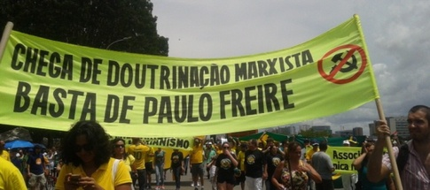
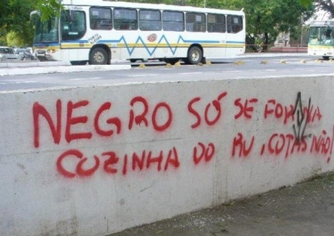
bullying" width="revelando o inconformismo de estudantes brancos em serem igualados ou superados academicamente por estudantes negros" height="ou são realmente uma estratégia de intimidação. O que é fácil de saber é que elas revelam o racismo subjacente à cultura brasileira e a sobrevivência da mentalidade escravagista nas classes média e alta.">
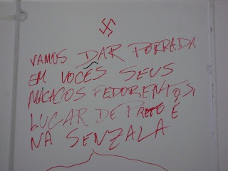
[Em um país com uma população negra e mestiça tão grande, é chocante ver o supremacismo branco tão atuante, embora ele ainda só se expresse livremente em pichações de muros.]
Redistribuição da renda
O Brasil tem um dos mais altos índices GINI do mundo, revelando uma discrepância imensa entre os mais ricos e os mais pobres. Embora a política econômica do PT tenha sido desastrosa e em grande parte ineficaz, o simples fato de que tenha sido tentada uma redistribuição de renda, mesmo limitadamente, já assustou a elite.
A simples discussão de temas como o imposto sobre grandes fortunas, o imposto de renda progressivo e a CPMF (que afeta o sigilo das transações bancárias) trouxeram preocupações. O fato de o PT nunca ter sido bastante forte no Congresso para aprovar medidas como essas não importa: se nada fosse feito o PT poderia, eventualmente, se tornar forte e levar adiante esse debate.
O pouco que se fez de política redistributiva (valorização do salário mínimo e bolsa família) já foi suficiente para aumentar a renda média das classes inferiores, trazendo milhões de pessoas para o mercado consumidor, o que teve grande impacto no crescimento econômico das regiões mais pobres do país. Além disso, o aumento da renda média do trabalhador significou que nas famílias mais pobres foi possível, pela primeira vez em gerações, que as crianças e os jovens não tivessem que trabalhar desde cedo. Para o típico pensamento elitista, isso quer dizer que os jovens pobres se tornaram "vagabundos". Para o típico pensamento populista, isso quer dizer que essas crianças puderam viver infâncias mais plenas e e dedicar-se aos estudos. Sob o governo do PT foi praticamente erradicado o trabalho infantil no Brasil.
Política do petróleo
O desejo de controlar as reservas de petróleo do pré-sal se chocam frontalmente com o projeto americano de controlar todas as reservas de petróleo do mundo (ou, pelo menos, da maior parte possível delas). Quase imediatamente após a descoberta dessas jazidas os EUA reativaram a VI Frota de sua marinha e criaram bases aéreas no Paraguai e na Colômbia, junto à fronteira do Brasil. No caso específico da base área de Comandante Estigarribia, no Paraguai, que mantém aviões bombardeiros a uma distância de voo de Brasília, o acordo para sua instalação só foi finalmente formalizado quando o Congresso paraguaio destituiu o presidente Fernando Lugo.
Para uma parte significativa da elite nacional este projeto do pré-sal é inaceitável. Alguns, os entreguistas, estão claramente a serviço da elite burguesa internacional, são funcionários de multinacionais ou simplesmente se tornaram quinta-coluna de seus interesses no país. O caso mais claro parece ser o de José Serra, surpreendido pelo Wikileaks negociando a abertura do pré-sal para a Shell caso fosse eleito presidente em 2010. Porém há uma parte também significativa da elite que não é entreguista, mas nacionalista, e que apenas acha que o Brasil, por não ter condições realistas de manter o controle do pré-sal, deve negociar sua entrega aos americanos nas condições mais favoráveis possíveis, pois a alternativa de longo prazo é uma invasão americana para tomá-lo de qualquer forma.[8]
Combate ao trabalho escravo
Pode parecer inacreditável, se estamos há mais de cem anos da abolição, mas até recentemente, quando o governo definitivamente perdeu a maioria no Congresso e os partidos de direita começaram a reverter essa política, os governos Lula e Dilma tinham sido os primeiros de nossa história a tentar punir empregadores que mantinham trabalhadores em condições análogas à de escravidão.
Sucessivas ações judiciais contestavam que os bancos públicos não emprestassem a empresas e pessoas surpreendidas mantendo empregados em cárcere privado ou condições inadequadas de trabalho. Além das inúmeras empresas e pessoas que conseguiram excluir-se por liminar judicial da lista de empresas implicadas em manutenção de pessoas em condição análoga à escravidão, houve, por fim, por parte de nosso sábio judiciário, o entendimento de que escravizar pessoas não é motivo suficiente para uma empresa ser banida do acesso ao crédito público e a própria lista foi proibida de existir, pelo menos temporariamente, até o governo redefinir os critérios para inclusão nela.
As tentativas do governo de estender aos casos de trabalho escravo as políticas de expropriação anteriormente aprovadas para os casos de tráfico de drogas ilícitas não foram bem recebidas pela elite brasileira.
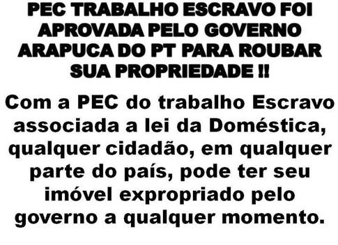
Como se pode ver, as bases locais do movimento são tutti buona gente.
Os Protestos de 2013
Os maciços protestos ocorridos em 2013 eram dirigidos inicialmente ao governo de São Paulo, pelo aumento das passagens de transportes coletivos, e foram organizados pelo Movimento Passe Livre, que posteriormente desapareceu de cena. Logo esses protestos passaram a atacar a organização da Copa do Mundo, devido a algumas medidas ríspidas tomadas pelo poder público na desapropriação de terrenos, como no Rio de Janeiro, e devido a um entendimento generalizado de que a organização do evento era incompatível com as dificuldades que o Brasil tinha (e tem) para resolver outros problemas, tidos como mais urgentes (entre os quais educação, saúde pública e segurança).
O sequestro da pauta pela direita
A reação inepta (e lenta) do governo federal permitiu que a direita sequestrasse as pautas do protesto e começasse a inserir as suas. Logo se pedia a derrubada do governo e surgiram "viúvas da ditadura" pedindo a volta do regime militar, entreguistas pedindo intervenção dos EUA e outros piores. O MPL foi gradualmente deixado de lado e agora quem comanda os protestos são o MBL (notem a semelhança do nome), os Revoltados On-Line, o Instituto Liberal e outros, como veremos.
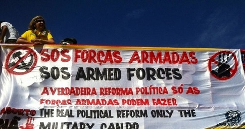
Uma mudança significativa foi a demografia dos protestos. Iniciados por jovens estudantes, foram gradualmente migrando para médias de idade e de nível educacional mais elevadas. Até que, finalmente, o próprio MPL decidiu encerrar sua campanha de protestos contra as tarifas de transporte público.
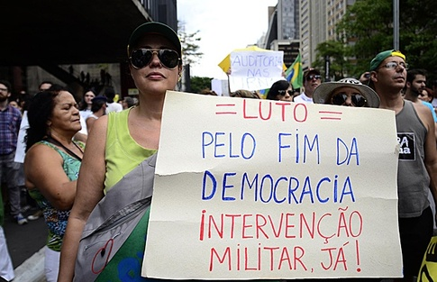
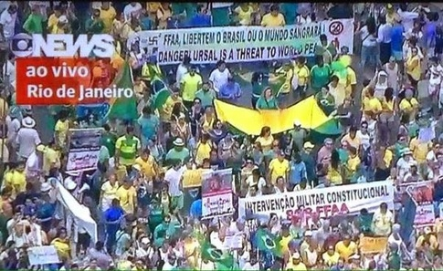
normalmente atribuído ao comunismo" height="é praticado amplamente pelos "patriotas" que protestam contra o governo de esquerda.">
O acuamento do governo
Os protestos de 2013, ocorridos em um momento em que o governo desfrutava de alta popularidade e não havia problemas econômicos significativos à vista, mostraram um flanco frágil para a direita atacar --- o que acabou ocorrendo com o apoio inexplicável de uma parte da própria esquerda, que preferiu fazer "autocrítica" do que enfrentar a ameaça reacionária e fascista que se desenhava. Esse "fogo amigo" originário de partidos como o PSOL, o PCB e o PSTU, além, principalmente, de lideranças consideradas de esquerda, como Marina Silva (então PV) e Eduardo Campos (PSB) ajudou a desunir a base governista e tornou factível para a oposição a realização de dois grandes objetivos:
-
Derrotar Dilma nas eleições de 2014 e
-
Inabilitar Lula para as eleições de 2018.
O primeiro objetivo quase foi atingido, embora Dilma ainda tenha vencido as eleições, contra quase tudo e contra quase todos. A misteriosa morte de Eduardo Campos em um acidente aéreo, ocorrida justamente em um momento no qual Dilma crescia nas pesquisas e Aécio parecia carta fora do baralho, serviu para confundir a tudo e a todos. A candidatura de Marina tirou votos de Dilma junto à esquerda ambientalista e uma boa parte do centro, mas não conseguiu tirar votos de Aécio em quantidade suficiente. No segundo turno, a maioria dos votos de Marina foram para Aécio.
Mesmo sem derrotar Dilma na eleição majoritária, as forças conservadoras conseguiram the next best thing: uma maioria ampla em ambas as casas do congresso, com uma significativa redução da bancada do Partido dos Trabalhadores. Isto tornou o governo Dilma muito desconfortável, sendo ela forçada a compor com setores historicamente combatidos pelo PT, como o agronegócio exportador. A oposição questionou desde o primeiro momento a legitimidade das eleições e tentou o impedimento da presidente, com uma série interminável de argumentos, descartados cada vez que desmentidos. A maioria oposicionista dividiu o PMDB, partido que detesta ficar com a minoria, e elegeu Eduardo Cunha para presidente da Câmara. Cunha passou a atuar de forma revanchista contra o governo, por causa de sua vitória contra o candidato petista, Luiz Eduardo Greenhalg, e chantageou o governo com o contínuo arquivamento de pedidos de impedimento, até que chegou o momento em que ele próprio foi denunciado por crimes fiscais e o PT, em uma decisão que será futuramente considerada o momento inicial de sua derrocada, aceitou votar em favor da cassação de Cunha, que, imediatamente, acatou o próximo pedido de impedimento que recebeu.
O PT perdeu a guerra da propaganda
Tudo isto aconteceu porque o governo perdeu a guerra da propaganda, e a perdeu porque nunca sequer tentou lutar. Todos os titulares da Secretaria de Comunicação do governo foram constrangedoramente incompetentes, a presidente tem um problema sério com a oratória e os porta-vozes que escolheu nunca a defenderam com firmeza. Adicione-se a isto o governo não ter usado, conforme poderia ter feito, as redes nacionais de rádio e televisão para dar a sua versão dos fatos, diante da massacrante onda de críticas e notícias desfavoráveis originária da imprensa.
O grau de incompetência do governo foi tão extremo que alguns setores da esquerda cunharam a frase um governo que não se consegue defender e uma oposição que não se pode apoiar.
Durante todo o mandato de Dilma Rousseff, as mais bem-sucedidas estratégias de contra-informação utilizadas para defender o legado petista surgiram espontaneamente da militância, de jornalistas independentes (os "blogueiros sujos") ou de simpatizantes (como o tuiteiro responsável pelo perfil "Dilma Bolada"). A falta de coordenação entre essas iniciativas, originária da falta de coordenação interna do próprio governo, que atingiu níveis paroxísticos de estupidez em certos momentos, impediu sua eficácia e entregou de bandeja à direita a primazia do discurso. Uma parte significativa da esquerda acreditou ingenuamente no poder das redes sociais para subverter a desinformação midiática, mesmo tendo exemplos recentes, nas revoluções coloridas e em Cuba, de como essas redes podem ser pervertidas e dirigidas pela CIA para colher informações ou para direcionar campanhas de propaganda.
Futuros historiadores entenderão e reconhecerão a inadequação de Dilma Rousseff para o mais alto cargo de liderança do país, não por seu caráter ou competência pessoal, mas por sua inaptidão para o discurso e a negociação da política. Líderes populistas do futuro analisarão este momento de nossa história e sequer permitirão que uma liderança que não sabe falar em público se eleja acima do nível de um legislativo municipal.
Digo isto porque nunca um governo foi derrotado pelo próprio silêncio. Os governos populistas que foram derrotados no passado pela reação direitista precisaram ser silenciados, em certos casos, como no Chile, por tiro, porrada e bomba. Mas nunca um governo se deixou levar ao cadafalso sem protestar.
Reconhecendo suas limitações oratórias, Dilma frequentemente delega a palavra do governo a algum de seus ministros. Diferentemente de governos anteriores, que contratavam jornalistas como porta-vozes quando não podiam ou não sabiam falar em público, Dilma entregou tão importante responsabilidade a membros de seu governo que não são significativamente melhores do que ela na oratória ou no carisma: José Eduardo Cardozo (então Ministro da Justiça), Aluízio Mercadante (então Ministro da Casa Civil) e Guido Mantega (então Ministro da Fazenda, e que nem brasileiro nato é). O caso de Cardozo é o mais espantoso, pois este ministro, que aparentemente gozava de tamanha confiança da presidente, foi o que menos se esforçou para defender o governo quando teve a chance de fazê-lo.
Ameaça ao futuro da esquerda
O segundo objetivo, como dito, era inabilitar Lula para concorrer em 2018, se possível banindo ou fragilizando a esquerda de tal modo que o discurso direitista pudesse voltar a ser hegemônico, como nos anos 1990, época que atravessamos sob o império do "Consenso de Washington".
Por muito tempo ainda pareceu que esta ameaça era uma mera paranoia de alguns esquerdistas mais exaltados, mas quando processo de impedimento da presidente começou a ser gestado houve uma divisão na esquerda, entre os que acreditavam que era preciso preservar o mandato de Dilma até o fim e os que achavam "até melhor" que ela caísse cedo, para que houvesse tempo hábil, até 2018, para que a direita assumisse, sofresse o impacto negativo de suas medidas impopulares, e isso permitiria o retorno triunfal de Lula. Essa segunda corrente logo se desfez, quando ficou claro que havia uma estratégia para desconstruir a imagem de Lula e, se possível, cassar o registro do PT. Se isso acontecesse, o impedimento de Dilma teria enfraquecido em vão a democracia brasileira.
Predominou, então, o entendimento de que não se tratava apenas da defesa do mandato da presidente, mas da defesa da própria democracia, acuada por um processo de golpe branco em curso.
O golpe foi proposto de diversas formas para testar a viabilidade de cada uma delas. A multiplicidade de ideias para resolver a crise que a própria direita criou não é sintoma de fraqueza, mas de um método para escolher uma alternativa que seja mais aceitável pela sociedade civil e, portanto, capaz de dar mais legitimidade ao novo governo. Essa multiplicidade indica que o golpe ocorrerá de qualquer jeito, mas é preciso testar o melhor caminho.
O inexplicável José Eduardo Cardozo
Historiadores do futuro queimarão pestanas tentando entender porque Dilma foi tão tolerante com seu inepto Ministro da Justiça, José Eduardo Cardozo, que assistiu passivo à tomada do controle da Polícia Federal pela oposição. Sob seu comando, ela deixou de ser o braço policial do Ministério da Justiça e passou a ser um órgão autocéfalo, ideologizado, em constante oposição ao governo. Agentes e delegados ameaçaram o governo nas redes sociais, conspiraram para sua derrubada, declararam abertamente voto na oposição e vazaram informações sigilosas para a imprensa (e certamente também para os adversários do governo e para os inimigos externos do Brasil). Cardozo jamais agiu em qualquer destas situações, limitando-se a dizer que manteria uma postura "republicana" e que esperava que a polícia cumprisse seu dever.
Enquanto Cardozo se fazia de surdo para as conspirações que ocorriam logo abaixo de seu nariz, Dilma permaneceu fiel a ele. Enquanto ele mantinha obsequioso silêncio diante das turbas que queriam fazer rolar as cabeças do governo, Dilma confiou que a tempestade passaria se simplesmente nada fosse feito. Tamanha foi a inação que exasperou os aliados do governo na sociedade civil.
pessoal do chefe de estado">
Cardozo tampouco ordenou que se investigasse o vazamento à imprensa de depoimentos obtidos sob sigilo de justiça e não obteve a apuração da instalação ilegal de um microfone na cela de um acusado, que gravou sua conversa com seu advogado, comprometeu sua defesa e violou todas as regras internacionalmente aceitas dos direitos dos acusados.
Tampouco Cardozo tomou atitude contra os libelos criminosos que certos veículos de imprensa, como a revista Veja, constantemente fizeram contra o governo durante o tempo em que foi ministro.
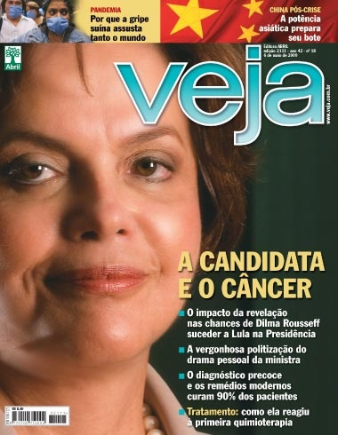
Por anos a fio a revista tem apresentado Lula como um bandido comum e o PT como uma reles gangue de ladrões. A inapetência do governo para enfrentar a guerra de versões levou ao estabelecimento no imaginário popular desta imagem negativa do PT e de toda a esquerda, pois, na cultura brasileira, "quem cala, consente".
Cardoso não se limitou, porém, a manter-se inativo quando devia agir. Ele também foi proativo quando nada deveria ter feito. Quando aliados do PT exigiram sua cabeça, --- o que vem ocorrendo desde pelo menos 2013 --- em vez de se preservar em silêncio, deixando a presidente à vontade para fazer o que quisesse, ele se deu ao trabalho de dar declarações de que sua nomeação era uma prerrogativa da presidente e que ela poderia demiti-lo quando quisesse, caso estivesse insatisfeita com o seu desempenho. Em 2015, quando os empreiteiros envolvidos na Operação Lava-Jato começaram a ser presos, Cardozo inexplicavelmente reuniu-se com eles, o que forneceu farta munição à oposição para alegar que o governo estava coordenando sua defesa. Cardoso se defendeu com uma nota na imprensa em que afirmava sua determinação "republicana" de manter a independência da Polícia Federal, o que tornou desconfortável para a presidente demiti-lo, pois pareceria que estava intervindo na PF para interromper sua ação investigativa. Em suma, Cardozo não só não ajudou quando tinha que ajudar como também atrapalhou quando deveria simplesmente ter ficado inativo.
A maior prova de que Cardozo, a quem Dilma sempre considerou um de seus "seis homens fortes" no governo, era um Judas ocorreu quando a presidente, praticamente obrigada a demiti-lo pela pressão do partido, teve de ouvir a oposição lamentar a demissão do ministro. Creio que diz muito sobre o caráter de um general quando o exército inimigo lamenta que ele seja retirado de um comando.
Contra quem?
É evidente até para o "mundo mineral" que o impedimento da presidente não objetiva atingi-la apenas. Existe um objetivo maior à vista. Tal como em 1964, o golpe pretende abortar a continuidade de um projeto de governo (e de poder) que se delineava como ainda mais duradouro. Em 1964 o golpe foi para impedir as eleições de 1965, nas quais Juscelino Kubitschek era o favorito. Em 2016 o golpe é para inabilitar Lula para as eleições de 2018.
Para quem não conhece bem a História, Juscelino tinha sido até então o mais querido presidente brasileiro. Um conciliador nato e habilidoso, com um projeto de Brasil grande (50 anos em 5). Contando com o apoio dos centristas do PSD (seu partido) e de boa parte das esquerdas (PTB e também o PCB na clandestinidade), venceu as eleições de 1955 por uma margem apertada, mas conseguiu afirmar a própria legitimidade e legou ao país obras importantes, das quais a mais notável é Brasília. Ao deixar a presidência em 1961, já saiu deixando o slogan "JK 65" e se esperava que ele levaria a eleição seguinte de lavada, ainda mais depois do desastroso Jânio Quadros e das dificuldades que o jovem e inexperiente João Goulart enfrentava.
A popularidade de Juscelino era inquestionável. A noção de que ele quebrou e endividou o país foi trazida à baila muito depois, para justamente denegrir o seu legado. Ele era tão popular que o próprio regime golpista o tratava com respeito, para evitar comoção popular, como ocorrera no episódio que levara ao suicídio de Vargas, em 1954.
Mesmo, porém, que não houvesse a perspectiva de Lula concorrer em 2018, ainda assim o governo de Dilma teria de sofrer grande pressão, pois para a direita interessava que o Brasil chegasse às eleições completamente "no chão" --- não apenas para oferecer um discurso à oposição, mas também para justificar o desmonte do estado que se seguirá a uma vitória direitista no Brasil.
Quem Está Por Trás da Cortina
Os autores franceses de romances criminais costumam dizer cherchez la femme (procurem pela mulher), sugerindo que uma frequente causa de crimes são relações complicadas ou seduções mal resolvidas. Eles têm sua razão, claro, mas mesmo nos crimes em que não há motivação romântica a frase pode ser verdadeira se trocarmos o objeto da frase. Cherchez l’argent oferece muito mais pistas para a solução de crimes. Mata-se mais por dinheiro do que por amor.
Já mencionamos que o Instituto Mises, que é estranhamente popular no Brasil atualmente, mas nem tanto em outros lugares.[9] Ele me parece ser uma das principais fontes de inspiração para os oposicionistas brasileiros, embora não seja o único envolvido.
O Instituto Millenium, gerido pelos principais meios de comunicação do Brasil e por uma parte da elite industrial, possui uma interface muito curiosa com certos setores do Judiciário. Praticamente todos os juízes que têm sido rigorosos em processos contra o PT foram agraciados, prévia ou posteriormente, por prêmios deste Instituto (notavelmente Gilmar Mendes, Ayres Brito, Joaquim Barbosa e Sérgio Moro). Outra ONG envolvida é o Instituto Liberal, liderado pelo jornalista Rodrigo Constantino, que escreveu na revista Veja por muito tempo. Ambos recebem fundos da Fundação Koch e de outras corporações internacionais.
Entre os integrantes do Instituto Millenium estão
-
João Roberto Marinho (co-proprietário das Organizações Globo)
-
Jorge Gerdau Johannpeter (CEO do Grupo Gerdau)
-
Armínio Fraga (economista, ex administrador do Quantum Fund, de George Soros, ex Ministro da Fazenda sob Fernando Henrique Cardoso e provável Ministro da Fazenda em caso de vitória de Aécio Neves em 2014)
-
Gustavo Franco (economista, ex presidente do Banco Central sob Fernando Henrique Cardoso)
-
Pedro Bial (journalista da TV Globo)
-
Helio Beltrão, Jr. (economista, filho de Hélio Beltrão, Sr., Ministro do Planejamento e posteriormente Ministro da Desburocratização no governo de João Figueiredo, último general-presidente da ditadura)
-
Guilherme Fiúza (journalista da revista Época, que pertence às Organizações Globo)
-
Nélson Sirotsky (CEO do Grupo RBS, afiliado das Organizações Globo atuante nos estados do Rio Grande do Sul e de Santa Catarina)
-
Daniel Feffer (CEO do Grupo Suzano, produtor de papel)
-
José Carlos de Salles Gomes Neto (CEO da agência de publicidade Meio & Mensagem)
-
Pedro Henrique Marini (CEO do BBM Bank)
-
Ricardo Diniz (conselheiro do Bank of America/Merrill Lynch)
-
Salim Mattar (CEO do Grupo Localiza)
-
Sérgio Foguel (conselheiro do Grupo Odebrecht)
-
William Ling (CEO do Grupo Petropar)
O site do Instituto Millenium publica conteúdo dos seguintes autores, entre outros:
-
Yoanni Sánchez (blogueira cubana anti-castrista que comprovadamente é financiada pela CIA e viaja pelo mundo difamando o seu país)
-
Solange Ferreira de Moura (conselheira da Estácio de Sá, uma universidade privada)
-
Roberto Rachewsky (fundador do capítulo do Instituto Liberal no Rio Grande do Sul)
-
Luiz Filipe Lampreia (ex Ministro de Relações Exteriores sob Fernando Henrique Cardoso e famoso por aceitar tirar os sapatos para entrar nos Estados Unidos, em um episódio profundamente humilhante para o Brasil)
-
Leandro Narloch (jornalista da revista Veja e autor de obras insanas como os guias "politicamente incorretos" da História Mundial, da História do Brasil, da Filosofia e da História Latino-americana; nos quais denuncia a "doutrinação marxista" da historiografia oficial e faz diversas afirmativas humilhantes aos povos latino-americanos e africanos)
-
João Mellão Neto (político e jornalista que também escreve para O Estado de São Paulo)
-
José Nêumane Pinto (jornalista que escreve para O Estado de São Paulo e já foi comentarista dos telejornais do SBT)
-
Edmar Bacha (ex presidente do Banco Central e atualmente conselheiro do Banco Itaú)
-
Bruno Garschagen (podcaster do Instituto Mises Brasil)
-
Eduardo Chemale Selistre Pena (conselheiro e consultor legal do Grupo OAS)
O Instituo Millenium reivindica conexões com o Instituto Liberal --- o que significa que ele é abertamente politizado, dando provas, assim, de que realmente os meios de comunicação brasileiros formam um partido político, o tal PIG (Partido da Imprensa Golpista). Além do Instituto Liberal, o Millenium possui algum tipo de relação com:
-
Instituto Atlântico --- integrado por empresas como Walmart, Localiza, Gerdau, MRV, Souza Cruz (British American Tobacco), Amil (plano de saúde) e Assobrav (Associação Brasileira dos Agentes de Vendas da Volkswagen).
-
Instituto Ling --- entre os financiadores deste Instituto encontramos parceiros como a Souza Cruz (novamente), a Câmara de Comércio Brasil-Estados Unidos e universidades americanas, como Georgetown, Columbia, IIT e Chicago.
-
Instituto Liberdade --- afiliado ao Instituto Mises (Teoria Econômica Austríaca, uma forma radical de neoliberalismo) e ao Heartland Institute (negadores do aquecimento global, financiados pelos Irmãos Koch), CSCCC (mais negadores do aquecimento global), SDN (mais negadores do aquecimento global!), RELIAL (Rede Liberal da América Latina), Property Rights Alliance (defensores de patentes e opositores da política brasileira de medicamentos genéricos), Mont Pelerin Society (centro de estudos econômicos liberais fundado por F. W. Hayek).
O Instituto Liberdade ficou offline a partir do início dos protestos de 2015 (pela última vez arquivado pela Wayback Machine em 19 de fevereiro), mas o seu site anterior informava entre seus membros e parceiros (além de vários outros já mencionados):
-
Margaret Tse (Instituto Mises e também Instituto Millenium, onde é citada como "especialista", sem se dizer em que)
-
Henri Siegert Chazan (Mont Pellerin Institute)
-
Fabio Ostermann (que estudou nos EUA com bolsas de estudo fornecidas pelo Instituto Koch)
-
Leandro Gostisa (Instituto Ling)
Todos estes institutos afirmam defender ou lutar por liberdade de expressão e de imprensa, como se no Brasil não houvesse nenhuma das duas. All of these claim to defend freedom of speech, which makes us think that Brazil is a totalitarian state:
O Instituto Liberal, um dos principais organizadores dos protestos, é parceiro de outros institutos (os citados acima, principalmente) e recebe doações, direta ou indiretamente, dos principais conglomerados de mídia do Brasil.
Há uma intensa polinização cruzada entre os membros de todos estes institutos, que frequentemente surgem publicados em outros e exercem diferentes papéis em cada um deles. Em sua maioria, essa gente teve bolsas de estudos nos EUA, custeadas pelos principais think-tanks americanos (Koch, Heartland, Mont Pelerin). Alguns chegam a orgulhosamente exibir estas conexões como se fossem credenciais, como Fabio Ostermann, que chegou a tirar fotos dentro do Instituto Koch. Por fim, temos o envolvimento, nunca inocente, da Câmara de Comércio Brasil-Estados Unidos.
Toda esta informação foi obtida, à época, nos próprios sites destas organizações. Nada era secreto. Imagine-se então o que seria mantido por eles em segredo!
Algumas empresas parecem ter aderido abertamente ao golpe, em vez de apenas financiá-lo indiretamente, como o Habib’s:
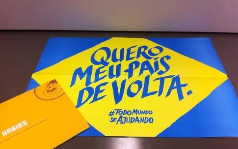
E a FIESP, com seus ridículos patos de borracha.
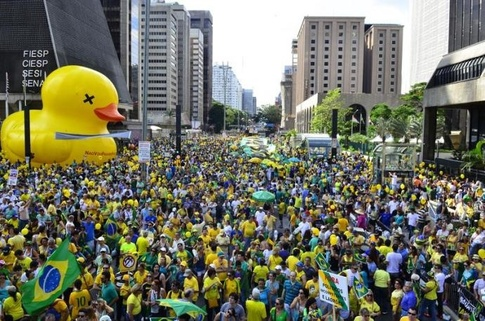
A FIESP tem suas razões para odiar o Partido dos Trabalhadores, pois o crescimento contínuo de outras regiões tem reduzido a atratividade de São Paulo para o estabelecimento de novas indústrias, o que se deve, também, à saturação de sua infra-estrutura e o desenvolvimento de mercados regionais, como mencionado anteriormente.
Os símbolos e as conclusões
Tendo entendido quais sãos os movimentos tectônicos que conduzem a esses protestos, temos de, finalmente, saber se eles apresentam indícios de direção estrangeira, como ocorre nas "revoluções coloridas" --- e assim nos aproximamos de nossa conclusão.
Ligando tudo isso, fica claro que o que está ocorrendo no Brasil segue um modus operandi semelhante ao que ocorreu nos países que foram desestabilizados por "revoluções coloridas" ou que tiveram mudanças de regime por esse meio.
Há um processo claro de erosão da democracia, que, se não foi suficientemente demonstrado anteriormente, fica agora:
Todas essas pessoas que estão protestando não são democratas, são pessoas que aceitavam a ideia de viver em uma democracia (ou até gostavam), mas deixaram de lado seu amor por ela na primeira grande contrariedade. Na América Latina, em geral, todas as forças políticas há muito tempo alijadas do poder pela via eleitoral tornam-se conspiradoras contra a democracia e, por isso, enfatiza-se tanto a necessidade da "alternância no poder". Nada disso importa na Europa, por exemplo, onde existem casos de partidos que dominam as eleições há várias décadas.
selfies com a tropa de choque. Normalmente um protesto popular encontra uma tropa de choque pronta para reprimir">
É gritante a diferença quando temos um protestos popular, como este, em que os professores do Paraná lutavam para proteger o seu fundo e pensão.
O que será que cria tal clima de camaradagem entre o manifestante e o policial normalmente enviado para reprimir manifestações?
As diferentes relações entre os manifestantes e os policiais em cada caso sugerem que ambos encaram essas manifestações de uma maneira diferente do que as demais manifestações são encaradas. Nem estão os manifestantes fazendo algo que se oponha ao status quo (a maioria dos estados é governada por oposicionistas e mesmo onde o governo é aliado ao PT os governadores não se sentem à vontade para reprimir, dadas as circunstâncias) e nem a polícia entende que eles estão subvertendo a ordem. A conclusão óbvia é que a polícia está apoiando essas manifestações, o que nos leva a concluir que, provavelmente, tanto os estados mais importantes estão aliados ao golpismo quanto os comandos das próprias polícias.
E isto, claro, não nos permite crer com muita firmeza que os militares se manterão longe disso. Não custa lembrar que Pinochet pareceu fiel a Allende até muito perto do golpe, e que Goulart nunca desconfiou dos principais comandantes militares do país, dois deles (Lott e Kruel) seus amigos pessoais.